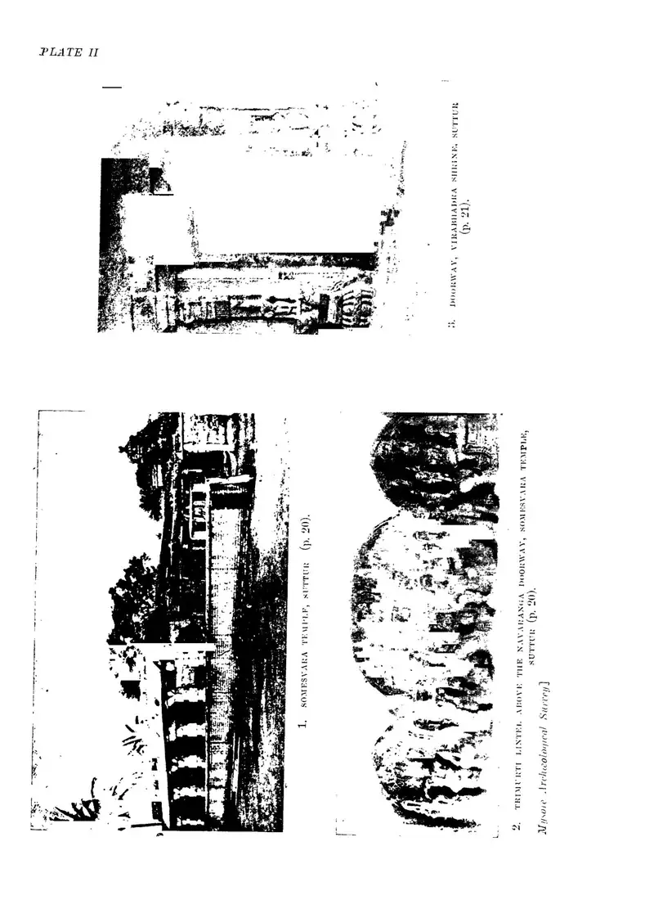
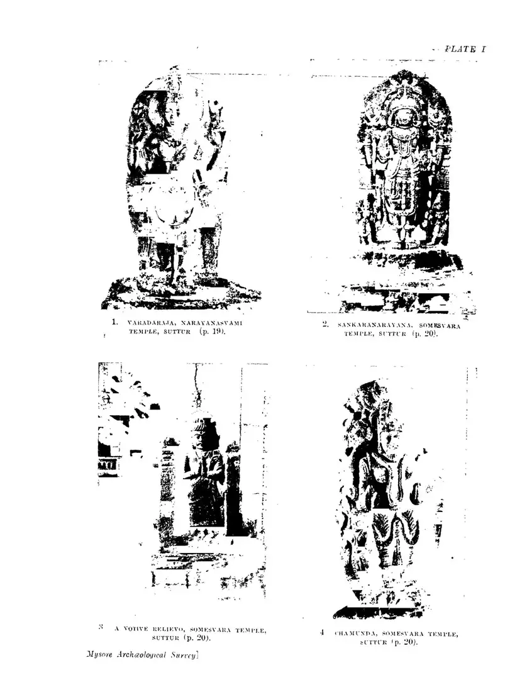
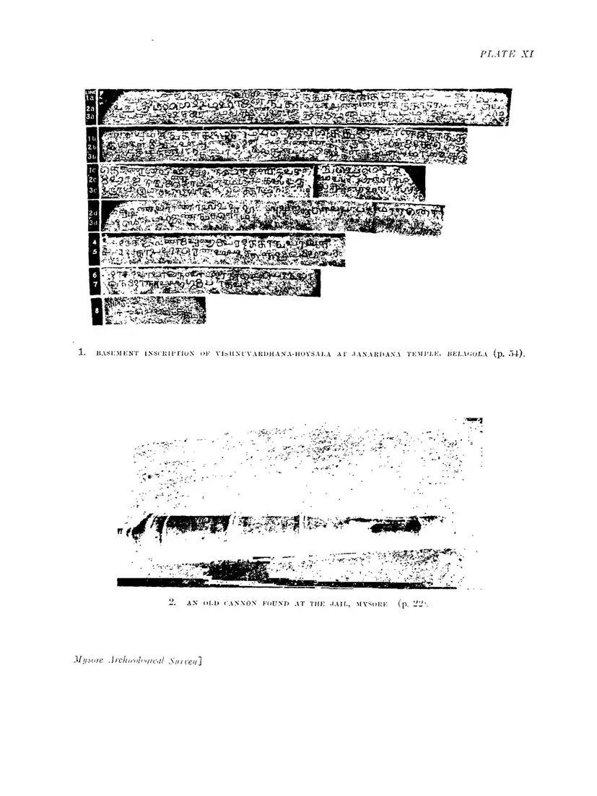
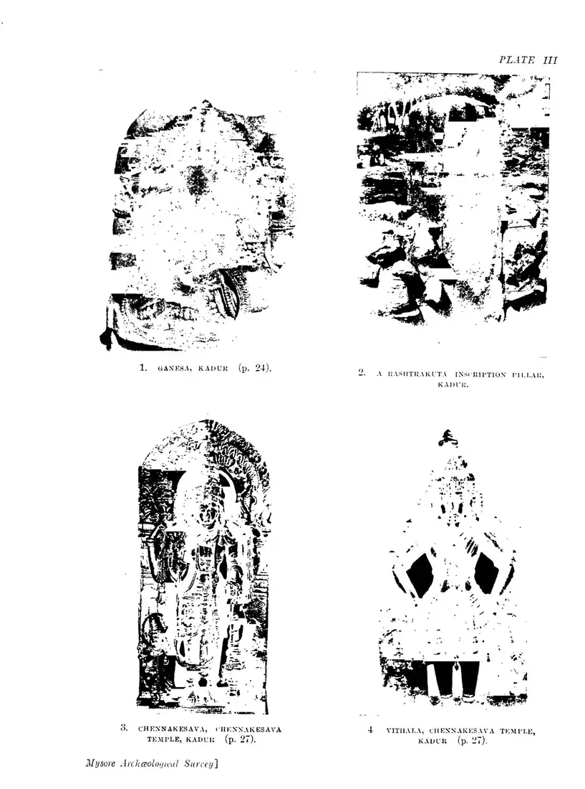
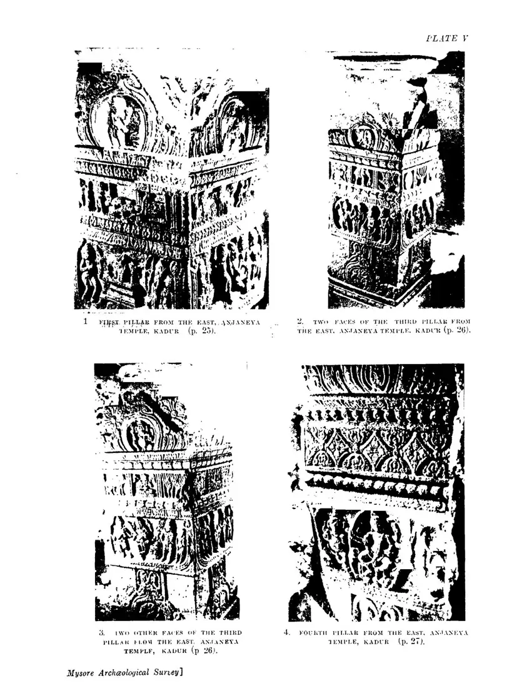
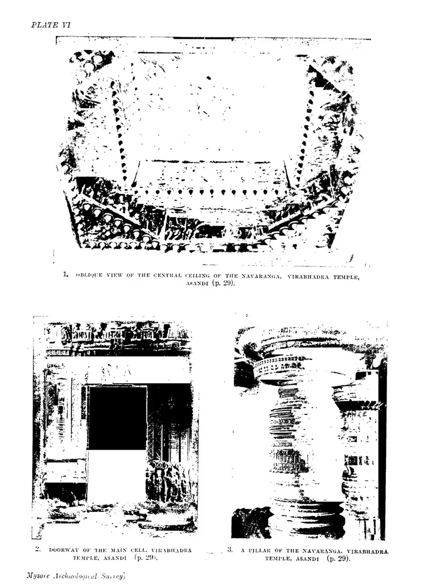
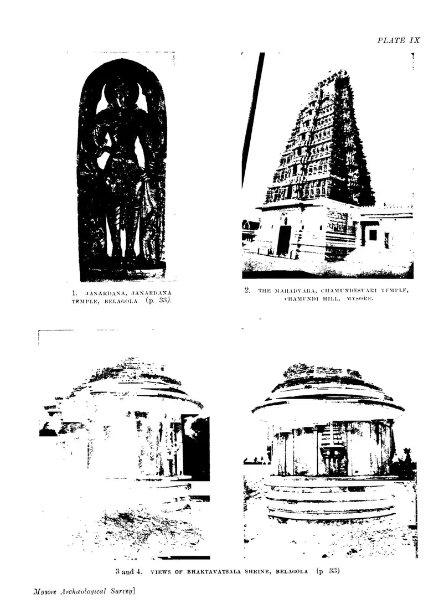
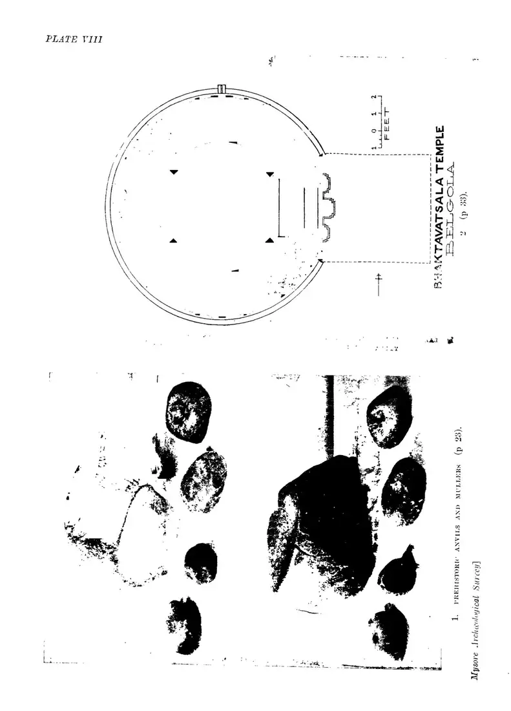

Annual Report of the Mysore Archaeological Department for the year 1944
Reading this page
p. 23 is the page number printed in the volume; PDF 391 is that page's place in the scanned PDF, the page to open in the source scan. The badge at the bottom right shows the page you are reading as you scroll: click it to show printed or PDF numbers, or both, and to jump to a page. ↑ Top takes you back to the start.
Footnotes are gathered at the end of the report, each with its printed page and number. Plates stand where the report binds them, at the end of the paragraph they interrupt; All plates, at the foot of the contents, shows them together.
Part I: Administrative
Dr. M. H. Krishna, M.A., D.LIT. (Lond.), continued as Director of Archæological Researches in Mysore in addition to his duties as Professor of History in the University. In continuation of the period of his deputation in Northern India from 18th December 1943 to 9th January 1944, he went on privilege leave for 10 days till the 17th January 1944. During the period of his absence from the headquarters, Mr. L. Narasinhachar, M.A., Assistant to the Director, was in charge of the duties of the office. Mr. M. Seshadri, M.A., Lecturer in History, Intermediate College, Mysore, was appointed O. O. D. as Junior Technical Assistant in this Department with effect from 23rd August 1943. The place of Architectural Assistant has continued to be vacant; proposals to fill up the vacancy have been sent up.
Owing to considerations of war economy and concentration on the work at the excavation finds, extensive tours for exploration of the ancient sites and monuments could not be undertaken in the State. While attending the Conferences in Northern India on deputation, the Director availed of the opportunity to study several monuments, excavations and museums in Northern India. In the Mysore State tours were undertaken to Seringapatam, Bēlūr, Arsikere, Chitaldrug, Bangalore, Nañjangūd and Belgola for inspection of the ancient monuments and concerting measures of conservation. The Assistant to the Director toured in parts of Bēlūr, Chikmagalūr, Kađūr and Seringapatam taluks, while the Pandits toured in parts of the Shimoga district and in the Mysore district and the neighbourhood.
Interesting pillars bearing minute sculptures on the four sides and assignable to the Rāshṭrakūṭa period were discovered in Kađūr. In Belgola the shrine of Bhaktavatsala is raised in a circular shape. The images of the Seven Mothers in the Hiredēvi temple near Balamuri are all beautiful and forceful and ascribable to the Choła period.
Architecture.
Though no fieldwork in excavation was done during the year, the work of preparing the Chandravalli Excavation monograph for publication was continued. Photographs of typical antiquities have been taken and drawings of select pottery specimens completed. Notes on individual excavations have been written out and are ready to be sent to the press.
The views of the Director in regard to the classification of the Ancient Monuments in the State and the need for revising the present arrangement in the interest of efficiency, were submitted.
Conservation. In connection with conservation, the temple of Kirtinārāyaṇa at Talkāḍ, the Chennakēśava temple at Bēlūr, the Ēśvara temple at Arsikere and the Raṅganātha temple at Seringapatam were inspected and conservation proposals were forwarded. Estimates for the repairs of these and other monuments in the State were scrutinised and returned either with countersignature or with proposals for revision as circumstances required. Arrangements to conduct experiments in regard to the conservation of the Gomata colossus at Śravaṇabelgoļa have been made and solutions from the Indian Institute of Science, Bangalore, and the Archæological Chemist with the Government of India, have been obtained. The Director's remarks on the report of the Assistant to the Director who had been deputed to Elephanta in connection with the conservation of the colossus were submitted.
The Director took part in the proceedings of the Renovation Committee in regard to the preservation of the Kēśava temple at Bēlūr. The Commemoration ceremony of the temple and the installation of the Bhakta-vigraha of His late Highness Sri Krishnaraja Wadiyar were duly celebrated by His Highness the Maharaja Sri Jayachamaraja Wadiyar Bahadur during December 1943. A suitable inscription commemorating the conservation work was also set up.
The total number of inscriptions collected during the several tours of the year is about fifty. Of these three are copper plate records and the rest are stone inscriptions. Among the copper plate records one set belongs to the time of the Gaṅga king Śrīpurusha and indicates that the king lived for about a hundred years. Among the lithic records, the inscription engraved on the basement cornice of the garbhagriha of the Janārdana temple at Belgoļa is dated in 1098 A. D. and happens to be the earliest inscription yet discovered of the time of Vishṇuvardhana Hoysaļa.
Eleven new coins were purchased during the year from the Director of Archæology, Gwalior. The 63 gold coins obtained through treasure trove last year were studied, identified and classified. (Please see Part IV of the Report). The old coins of Chandravalli are being further classified and studied and the catalogue is being revised for publication.
Numismatics.
A Kannada manuscript relating to the history of Kempe Gauda II of Bangalore was examined. Another manuscript relating to the history of Seringapatam was also examined and a review of it is published in Part V of this Report.
A set of copper plates relating to the history of the Gangas was purchased for the museum. The coins acquired for the museum during the year have been mentioned above. The Chandravalli antiquities exhibited in the museum were all taken out and re-classified.
About twenty publications were added to the Office Library.
Library.
The Annual Report of the Department for 1942 was published. That for 1943 was completely printed and is in the course of submission to Government. Supplements to the Epigraphia Carnatica, Vols. XIV and XV (Mysore and Hassan districts) were completely printed and are being distributed. The Guide books to Bēlūr, Seringapatam and Śravaṇabelgoła were revised and issued. In connection with the installation of the Bhakta-vigraha of His late Highness Sri Krishnaraja Wadiyar at Bēlūr ; a souvenir was issued commemorating the renovation work carried out at the temple.
The Director accompanied the Hon'ble British Resident in Mysore to Seringapatam to show him round the monuments and explain the history of the place. During January 1944 he accompanied Their Highnesses the Maharaja and Maharani of Travancore to Bēlūr and Seringapatam to show them round the monuments. During June 1944 he accompanied His Highness the Jam Saheb of Nawnagar to Seringapatam to show him round the monuments and the exhibits at Scott's Bungalow.
The Department participated in the exhibitions held during the Silver Jubilee celebrations of the Government Muhammadan College, Madras, the Kannada Sahitya Parishat Sammelana, Shimoga, and the twentieth session of the Indian Historical Records Commission at Aligarh.
Periodical notes of inspection and reports, answers to queries, etc., were being submitted from time to time.
The receipts and expenditure of the Department under the budget heads amounted to Rs. 12,989-5-0 and Rs. 12,707-9-0, respectively, during the year. A sum of Rs. 281-12-0 was realised by the sale of the departmental publications and photographs.
The success of the work of the department, in spite of the obvious want of adequate staff, has been due to the sincere co-operation of the members of the staff and their enthusiasm for research and willingness to work overtime as exigencies demanded.
Staff. Tours : Exploration. Architecture
Excavation. Conservation; Epigraphy; Numismaties; Manuscripts; Museum; Library; Publications. Other activities. Finances
Part II: Conservation of Ancient Monuments
Conservation Report on the monuments inspected by the Department of Archaeology, during 1943-44.
Kadur District
Kadūr
Āñjanēya temple
The four pillars of dark soapstone in the verandah of the Āñjaneya temple standing on the northwest bank of the Sinîrhoṇda are all good works of art with minute figure sculptures and are worthy of preservation as examples of the Rāshṭra-kūṭa period. They may be removed to a museum since they are best displayed there. Similarly the mutilated image of Ganēśa set up against the front wall of the adjoining Iśvara temple may also be removed to a museum.
Part II: Conservation of Ancient Monuments › Kadur DistrictYelļambaļasi
Kēšava temple
The repairs proposed in the Annual Report of this Department for 1942, page 12, are very necessary and urgent, since the temple is fast going to ruin and would collapse before long, if neglected. Some of the beams above the Lakshmīnarasimha shrine have become dislodged. They should be set in position very early. The roof, too, of the temple and particularly on the northern and north-eastern sides requires to be made waterproof. The outer walls on the north-eastern side have become greatly dilapidated, so that immediate attention seems very necessary.
The filthy surroundings of the temple need also to be improved and tidied up. Owing to the party struggles in the village, the temple is being neglected by the villagers. The local Shanbhogue Mr. Venkatasubbiah has been taking keen interest in the institution and maintaining the Archak in his house. He volunteers to donate a sum of Rs. 1,000 for the renovation of the temple and raise also subscriptions as far as possible. The amount thus collected may be supplemented by a suitable grant from the general muzrai funds and the repairs to the temple may be undertaken.
The mukhamanṭapa of the temple may be used as a local museum for collecting and preserving stray sculptures and inscriptions lying here and there in the vicinity of the village. The image of Sarasvati in front of the village was intact at the time of inspection in 1942; but it is now pulled down by some of the villagers deliberately and is broken to several pieces. The pieces are lying nearby. They may be recovered and the image restored and preserved. An important inscription of the time of the Gaṅga king Śrīpurushā is lying in a neglected state in a cocoanut grove to the east of the tank. It may also be preserved. Likewise, the doorway and lintel piece of the ruined ĵvara temple to the north of the tank may also be carefully preserved in the local museum. The old cannon pieces lying in the navaraṅga of the Kēśava temple may be removed to a safe place in Kađūr or sent over to the Archæological Museum at Mysore.
Part II: Conservation of Ancient Monuments › Kadur DistrictPatṭanagere
Lakshmīnārāyaṇa temple; Nagarēšvara temple
LAKSHMÎNĀRĀYANA TEMPLE.
The temple of Lakshmînārāyana is almost intact and contains good sculptures in the cells. By effecting some initial repairs and tidying up the surroundings regular worship can be arranged for. The roof and flooring of the temple require early attention.
The archak may be assigned the duties of a caretaker in addition and paid some allowance. The small sum of Re. 1 per mensem which he is getting at present is hardly encouraging to him.
It is reported that the temple was formerly in enjoyment of an inam plot to the extent of about 20 acres near Ballekere. If possible, this land may be restored to the temple. It is also reported that a sum of about Rs. 1,000 is at the credit of the institution. This sum, supplemented by a suitable grant from Government would perhaps be enough to effect the initial repairs.
NAGARĒŠVARA TEMPLE.
This is perhaps the oldest structure in Pattanagere, though it is simple in design and workmanship. Among its devotees, the Vaiśyas of Birūr particularly, like Mr. K. T. Satyanarayana Setty, may be encouraged to provide for the cost of the initial repairs and regular worship.
Āsandi
The conservation proposals in respect of the Gaṅgēśvara and Brahmēśvara and Virabhadra temples at this place are published on page 13 of the Annual Report of this Department for 1942. Early steps may be taken to effect the repairs, since the villagers have been neglecting the upkeep of the monuments owing to party feelings. All white-washing of the walls, etc., in the Virabhadra temple should be slowly and carefully scraped off and the railings of about the Rāshṭrakūṭa period in front of the temple preserved in a better place.
Part II: Conservation of Ancient MonumentsMysore District
Suttūr (Nanjangud Taluk)
Nārāyanasvāmi temple. Sōmēšvara temple
No heading in the body: this section starts at its printed page (6).
Suttur (Nanjangud Taluk).
NĀRĀYANĀASVĀMI TEMPLE.
This temple may be put into Class III for purposes of conservation on account of the image. The brick vimāna which is much damaged may be removed and the rest of the temple put into a state which will prevent further deterioration.
SĀMĒŠVARA TEMPLE.
This temple is classed as a Third class Ancient Monument. Its original tower is seen in a photograph retained in the matt. It is seen that the top was an ornat Hoysa la structure with numerous potstone sculptures which are finely designed, though rudish and lacking in finish, with yakshas and dancers under tōraṇas. It appears the top was pulled down with the permission of the Government Architect and a new ugly tower was constructed. The old sculptures are imbedded in the compound wall and preserved.
Part II: Conservation of Ancient Monuments › Mysore DistrictNanjangūđ
Srīkaṇthēšvara temple
The east face of the tower has been repaired. The repairing of the other faces may be taken up. The pavement has been reset and cement-pointed. The images in the prākāra require to be cleaned. The repairs proposed in the Annual Report of this Department for 1940 and 1941 in respect of the sōmasūtra, the roof drains, etc, are yet to be done.
Part II: Conservation of Ancient MonumentsMandya District
Seringapatam
Śrī Ranganātha temple
Garbhagriha; Outer walls of the garbhagriha Tower of the garbhagriha; Second outer pradakshina. Tower of the Mahādvāra
The Rānganātha temple at Seringapatam was inspected during September 1943 in the company of the Executive Engineer, Mandya, and the following detailed conservation note was forwarded by the Director of Archæology with a request that a detailed estimate in respect of the several items of repairs might be forwarded for the Director's countersignature. The receipt of the estimate is awaited.
7.
Garbhagriha:
1. The inside walls of the garbhagriha may be whitewashed with a special mixture of white clay ( aṛraṣmaṇa or naṣma ) mixed in sandal water, without touching any sculptured parts.
2. The holes in the flooring may all be packed and closed with cement mortar and jelly, except the sōmasūtra .
Outer walls of the garbhagriha:
3. The pointing on the outer walls has to be done inconspicuously using mortar coloured so as to resemble the colour of the stones.
Tower of the garbhagriha:
4. The stucco sculptures, etc., of the vināna tower require to be suitably touched up here and there. On the south-west side of the tower and at the top the original plaster work has peeled off. The portion may be replaced by fresh mortar work; but the mortar to be used requires to be of a colour matching the surroundings.
Second outer pradakshina:
5. The flooring of the second pradakshina is uneven in several places. The stone slabs may be reset evenly and pointed with coloured cement.
6. The walls have been indiscriminately whitewashed and the inscriptions covered with chunām. The chunām coating of the sculptures and inscriptions requires to be carefully scraped off without damaging the sculptures or letters. Further whitewashing of these portions should not be permitted.
Tower of the Mahadvara:
7. The north-eastern and south-western corners of the mahādvāra have developed cracks from the fifth storey to the bottom, so that in every storey the cracks are clearly visible. The portions have to be properly secured from getting out of plumb and collapsing. The introduction of suitable bond stones, L-shaped bands, dowels, etc., may all be considered and tried as also steel bars from the north-east wall to the south-west wall as at the Victoria Jubilee Hall in Mysore, tightened by double screw jacks. And the cracks will have also to be grouted with cement. The outer stone walls of the mahādvāra have to be properly strengthened so as to be able to bear the weight of the tower above. In the north-east part several of the slabs have become somewhat dislodged or out of plumb due to sinking. Here the foundation has to be strengthened by underpinning. On the west, south-west and south sides the joints between the slabs have widened in several places and some of the eaves-shaped stones have developed vertical slits due to the weight above, on the one hand, and the growth of pipul plants in between them on the other. Some effective tree-killer may be tried for eradicating the roots and the joints between the slabs on all the faces grouted with cement so that the stone portion of the tower might become a solid mass, capable of bearing the weight of the masonry tower above. But the pointing of the joints will have to be done inconspicuously in coloured mortar so as to resemble the stones used.
8. After suitably treating the cracks in each storey, the walls on the inside may be plastered.
9. The old wooden beams and pillars which have been eaten up or otherwise have become useless may be replaced by new ones and properly preserved by the use of preservatives.
10. The flooring of each storey has to be redone thoroughly providing for a proper outlet for water through an inconspicuous pipe which may be introduced vertically right from the topmost storey.
11. Inside the topmost storey the wooden beams and pillars have to be reset immediately. The fissures in the brick roof have to be filled up and the inner face has to be well plastered. The bats inhabiting the storey must be driven out by keeping cowdung, grass, etc., smouldering for one or two days and spraying phenyl. A trap door or wire-netting may be provided for the top floor in order to prevent the bats from coming back to it.
12. The outer face of the tower is much coated over with chunām, so that all the sculptured portions have become completely covered. The chunām needs to be carefully scraped off slowly so that the original stone or plaster work is laid bare to view from bottom to top.
13. Renovation of the mutilated sculptures should follow original models in every case. What has been done so far in the uppermost three storeys cannot meet with my approval. It is a pity that the work has progressed too far to be remedied. The sculptures and other details have been worked out according to the fancy of the workers who have not understood the spirit of Indian sculpture. These workers have been trained in the Western school of art which lays stress on realistic details, while the original sculptures of the tower have been worked by artists who followed the old Indian idealistic standards. The atmosphere created by the present renovation work is alien to that of the original and should not be allowed to be proceeded with, at any rate, in regard to the remaining storeys of the tower. It is desirable that two or three workmen trained in the local style of architecture and sculpture may be employed in addition to those already working and renovation work carried on very carefully under proper supervision following invariably the contour of the originals themselves and with reference, wherever necessary, to the sculptures existing on the tower of the garbhagṛiha.
14. It is also necessary, before proceeding further, to prepare working drawings for the four faces of each storey of the tower, so that the details of the sculptures, the symbols held by the figures, and the several ornamental motifs may not be lost sight of.
15. Enlarged photographs, too, in respect of each face of the tower may be arranged to be obtained for guidance of the workers.
16. Electric lights may be provided in each storey of the tower to facilitate periodical inspection of the storeys.
Since forwarding the above conservation note, the tower of the Ranganātha temple, that is, the exterior face only, has been entirely replastered, the original stucco images being replaced by new ones. Incidentally it has to be observed that the original character of the tower is totally lost and the style of the present stucco images is definitely alien to Indian atmosphere. If the Public Works Department had consulted the Director of Archæology at the outset and his countersignature obtained for the estimate for Rs. 19,141 before it was sanctioned by Government, it would have been better. But it is too late now and the work has been done.
Part II: Conservation of Ancient Monuments › Mandya DistrictTalkāđ
Kīrtinārāyaṇa temple
As per Government orders no repairs can be done to any ancient monument on the conservation list without obtaining the countersignature of the Director of Archæology for the estimate of repairs. But in the case of the Kīrtinārāyaṇa temple at Talkāḍ, as in that of the Ranganātha temple at Seringapatam, it was found that repairs to the extent of nearly Rs. 2,000 including the construction of size stone walls, the removal of brickwall, re-roofing, etc., had been carried out without any intimation to the Archæological Department. Accordingly a joint inspection to rectify the flaws and propose suitable alterations and additions in the estimate was held in October and a revised estimate was called for. Since even this latter estimate contained several undesirable items and was also not satisfactory in certain other respects another joint inspection in the company of the Executive Engineer was made in May and a fresh estimate was asked to be prepared and forwarded for countersignature. The receipt of the fresh estimate is awaited.
Part II: Conservation of Ancient Monuments › Mandya DistrictBelgola
Janārdana temple
Though plain of structure, the chief interest of this temple lies in the fact that it was built and endowed during the days when the Hoysaļa king Vishnuvardhana was yet a yuvarāja. His earliest inscription so far found is inscribed on the
2 basement cornice of the garbhagrīha of the temple. The image, too, of Janārdana in the main cell is of good workmanship, so that the monument deserves to be included in the III class list and preserved from further decay. Some initial repairs to the roof and walls may be caused to be made and the flooring generally levelled up. The surroundings need to be cleared of the rubbish and made neat and tidy.
Bhaktavatsala shrine
This shrine which stands to the south-west of the Janārdana temple is built in a plan which is rather rare in the Mysore State. It is a small neat structure almost intact and can be preserved without incurring great expenditure. The slabs of the outside walls have become a little out of plumb here and there and can be held in position by cement-grouting the joints. The brick vimāna above the cell may be examined with a view to its restoration if possible. Otherwise it may have to be knocked down completely and the roof made water-proof. Here also the surroundings need to be levelled up and made neat and tidy. The temple may be put into class II for purposes of conservation.
All the stray sculptures and inscriptions found in the vicinity of the place may be brought over and preserved in the enclosure of the temple. One of the important inscriptions belonging to the early Mysore period was standing near the well in front of the temple. Unfortunately it has been broken to pieces by the P.W.D. contractors and used in the construction of some steps by the side of a culvert across a channel to the south-east of the Janārdana temple. One of the pieces was actually traced when the spot was examined by the members of the Department. The Deputy Commissioner and the Executive Engineer, Mandya, have both been addressed in the matter and requested to make arrangements to recover all the four pieces of the inscription and send them over to the Archæological Department at Mysore, for being restored.
Srīnivāsakshētra
It is a pity that the temple here, the original structure of which goes back to about the Chōła period and contains beautiful figures, has become totally neglected. It is in an awful state of ruin and requires immediate renovation particularly with regard to the original structure. If necessary all the accretional structures in the compound may be knocked down. The trees and other vegetation growing in several parts in the area should all be cut down. The leaky roof should be made waterproof. The dislodged slabs should be set right and the joints grouted with suitably coloured mortar. The emoluments of the archak are too low to induce him to take care of the temple. He may be given a suitable allowance to encourage him to look after the monument better. The temple may be included in the III class list of Ancient Monuments for purposes of conservation and the initial repairs mentioned above may be effected.
Part II: Conservation of Ancient MonumentsHassan District
Šravaṇabelgola
In connection with the repairs to the monuments at Śravanabelgola an estimate for Rs. 26,000 was received from the Executive Engineer, Hassan. It was however returned with the request that some of the items might be modified and some more added on. The conservation proposals regarding the monuments are as follows :—
General. Kalyāṇi. Dođdabetṭa
Image of Gōmaṭēšvara; Chikkabetṭa
1. The entrance to the town should be laid out by acquiring the lands and provision made for parking carts and cars and for having a one way traffic into and out of the town.
2. A large number of rest houses may be caused to be constructed.
KALYANI.
3. Water must be pumped out and the inlet and outlet may be opened and provided with shutters.
4. The gōpuras and manṭaps may be pointed with suitably coloured mortar
DODDA BETTA.
5. Provision of railings on both sides of the steps leading to the hill temple may be provided.
6. The inscription of Rangaiya at the back of the Brahmadēva shrine may be released to view.
7. The damaged corners of the 2nd gateway may be covered up and the lichens carefully removed by chemical wash.
8. The cuttings at the base of the pillars of the 3rd gateway may be pointed with coloured mortar.
9. Part of the wall belonging to the 4th gateway is out of plumb. It may be reset and the neighbourhood pointed with mortar. The leaks of the gate may be stopped and the mud walls removed and opened out as far as possible.
10. The north and east faces of the platform of the Odegal Basti are out of plumb. They may be rebuilt with concrete filling.
11. The roof of the Brahmadēva pillar manṭapa may be reset. The lichens may be removed and the pillar cleaned.
12. One of the joints of the sixth gateway is out of plumb; the upper brick work may be removed and a separate light parapet put in.
14. The ugly walls covering the small doorway on the west may be removed and battened wooden doors provided.
15. The Chāmarāja Mantap may be rebuilt with the old materials.
16. The dressed stone pillars of the Guṭlakāyajji manṭap, etc., should not be covered with whitewash or paint. The out of plumb pillars may be reset.
17. The cactus tree growing on the brick top of the Vardhamāna Basti should be removed and the brickwork rebuilt.
18. An entrance may be opened in the western wall of the enclosure of the hill temple from which the pilgrims that enter may go out after finishing the worship.
IMAGE OF GOMATESVARA.
19. Injections with a hypodermic needle as suggested by the Director-General of Archæology in India may be tried, the liquid being obtained from the Western Circle.
CHIKKA BETTA.
20. The area of inscriptions may be circumscribed by rockcut arc-like channels on the east and west.
21. The disintegrating granite cornices of the south wall of the Pārśvanātha Basti may be treated with preservatives and the result studied.
22. The brick tops of the Mahānavami manṭapa need replastering. The inscription pillar which is out of plumb may be observed for further settling.
23. The corners of the Śāntinātha Basti may be pointed with suitably coloured mortar.
24. The Bharatēśvara image may be railed off and hitting the image with stones should not be permitted.
25. The load on the roof of the Chandraprabha basti may be lightened.
26. The floor of the pradakshiṇa in the Kattale basti requires to be paved. The brick walls are to be rebuilt with size stones and the roof is to be completely remade. But the old frame work should not be disturbed.
27. The barred windows in the Chandragupta basti (east side) are out of place. The spaces on the fifth window are too wide. Expanded metal could be inserted at the back of the windows if possible.
28. The garbhānkaṇa at the Ādiśvara basti has to be plastered. The supporting pillars here are upside down.
29. The walls of granite at the Chāmuṇdarāya basti are peeling off. The navaraṇga is leaky. The red lead covering the image in the upstairs may be removed.
30. Props are needed for the western pillars at the north Ādiśvara basti.
31. The north beam of the Śāsana Maṇṭapa requires to be replaced and the ugly wall removed.
32. The roof of the north Śāntiśvara basti requires to be replaced.
33. The damaged maṇṭapas near the dome may be removed.
Part II: Conservation of Ancient Monuments › Hassan DistrictBēlūr
Chemnakēšava temple
The Renovation Committee; II. H. the Maharaja
On the recommendation of the Archæological Department in 1929, the question of opening out the courtyard and renovating the Chennakēšava temple stage by stage, was taken up by the Mysore Government and the Belur Temple Renovation Committee was formed in 1935 for carrying out the work systematically. All the ugly and dilapidated later structures like the Nāganāyakana maṇṭapa were removed and the sculptures were cleared of age-old soot and wax. The ceiling of the śukanāsi, the north-east wall of the main temple and the sanctum of the Chennigarāya shrine were rebuilt, the buildings abutting the east, south and north ramparts were repaired, the compound was paved, new images of Rāmānuja and Garuḍa replaced the damaged ones, a new car shed was built, the front of the temple was improved, electric lighting was installed and a host of smaller repairs were carried out. The materials were obtained free locally. The Archæological, Muzrai, Public Works and the Electrical Departments gave their supervision with little extra cost and the funds generously granted by Government from the Muzrai and State funds were utilised mainly for the workmen's wages and other sundry expenses. The total work carried out is estimated at nearly five lakhs of rupees, while the actual expenses have amounted to only a little over one lakh. This conservation work and the scientific skill, zeal and co-operation evinced by the various limbs of the Government of Mysore in carrying it out, have won the admiration of the Director-General of Archæology in India and other distinguished visitors.
Thanks to the generosity of His late Highness Śrī Krishṇarāja Wadiyar IV and His Highness Śrī Jayachāmarāja Wadiyar Bahadur—may H. H. The Maharaja. His dynasty endure for ever—the labours of the Renovation Committee have been rewarded by the preservation of one of the greatest treasure houses of Indian art. The temple has been restored as nearly as possible to its original form. Only two major items of work now remain to be attended to: the mahādvāra and the vimāna.
Bhakta vigraha. Commemoration
No heading in the body: this section starts at its printed page (14).
In commemoration of the work carried out during the enlightened rule of His late Highness Sri Krishṇarāja Wadiyar IV and as a mark Bhakta vigraha . of His late Highness' devotion to the deity and personal interest in the conservation of the temple, a statue in bronze of His late Highness, which was got prepared at the Chamarajendra Technical Institute, Mysore, was consecrated and installed at the temple along with the metallic statue which is traditionally identified with Vishnuvardhana, the builder of the temple. The commemoration ceremony was performed by His Highness Srī Jayachāmarājendra Wadiyar Bahadur during December 1943.
Following the ancient custom, a commemorative inscription in Kannada was also set up, giving a very brief account of the work done.
Commemoration. The text of the inscription reads as follows :—
ಸೂರ್ಯ ಚಕ್ರ ಗಂಡಭೇರುಂಡ ಶಂಖ ಚಂದ್ರ
|| ಶ್ರೀಃ ||
ಯಂ ಶೈವಾಸ್ನಮುಜಾಸತೇ ಶವ ಇತಿ ಬ್ರಹ್ಮೇತಿ ವೇದಾಂತಿನೋ |
ಬಿಳಿದ್ದಾ ಬುದ್ದ ಇತಿ ಪ್ರಮಾಣಪಟವಃ ಕರ್ತೇತಿ ನೈಯ್ಯಾಯಿಕಾಃ||
ಅರ್ಹನ್ನಿತ್ಯಧ ಜೈನಶಾಸನರತಾಃ ಕರ್ಮೇತಿ ಮೀಮಾಂಸಕಾಃ |
ಸೂರ್ಯಯಂ ನೋವಿದಧಾತು ವಾಂಧಿತಘಂ ತ್ರೈರೋಕ್ಯನಾಥೋಹರಿಃ ||
ಸ್ವಸ್ತಿಶ್ರೀ ಶಕಾಬ್ದ ಗಂಡ್ಯನೆಯ ಹೇವಿಳಂಬಿ ವರ್ಷದಲ್ಲಿ ಕರ್ಣಾಟಾಧೀಶನಾಗಿದ್ದ
ಶ್ರೀ ವಿಷ್ಣುವರ್ಧನ ಹೊಯ್ಸಳದೇವರು
ಬೇಲೂರಿನಲ್ಲಿ ಶ್ರೀ ವಿಜಯನಾರಾಯಣಸ್ವಾಮಿಗಾಗಿ ಸದ್ದಕ್ತಿಯಿಂದ ಕಟ್ಟಿಸಿದ ಮತ್ತು ಹೊಯ್ಸಳರ ಶಾಂತಲಾ ದೇವಿಯರು, ನರಸಿಂಹದೇವರು, ವೀರಬಲ್ಲಾಳದೇವರು, ವಿಜಯನಗರದ ಹರಿಹರರಾಯರು, ನರಸಿಂಗರಾಯರು, ಕೃಷ್ಣರಾಯರು, ಶ್ರೀರಂಗರಾಯರು, ಬೇಲೂರಿನ ವೆಂಕಟಾದ್ರಿನಾಯಕರು, ಮೈಸೂರಿನ ಇಮ್ಮಡಿ ಕೃಷ್ಣರಾಜ ಒಡೆಯರು ಮೊದಲಾದ ಭಕ್ತರುಗಳಿಂದ ಅವರವರ ಕಾಲದಲ್ಲಿ ಪರಿಪಾಲಿತವಾದ ಭಾರತೀಯ ಶಿಲ್ಪಕಲೆಗೆ ನಿಕ್ಷೇಪಸ್ಥಾನ ವಾದ ಪರಬ್ರಹ್ಮನ ಸಾನ್ನಿಧ್ಯದಿಂದ ಪವಿತ್ರೀಕೃತವಾದ ದೇವಾಲಯವು ಜೀರ್ಣವಾಗಿರಲು,
ಅತ್ರೇಯಸಗೋತ್ರ ಅಶ್ವಲಾಯನಸೂತ್ರ ಬುಕ್ಕಾಖಾನುವರ್ತಿಗಳಾದ ಶ್ರೀಮದ್ರಾಜಾಧಿರಾಜ ಮಹಾರಾಜ ಶ್ರೀ ಚಾಮರಾಜೇಂದ್ರ ಮಹೇಶಾಲರ ಧರ್ಮಪತ್ನಿ ಶ್ರೀ ಮಹಾರಾಜ್ಜಿ ವಾಣೀವಿಲಾಸದ ಕೆಂಪುನಂಜಮಾಂಬಾ ಗರ್ಭಸುಧಾಂಬುಧಿರಾಕಾಸುಧಾಕರಾಯಮಾನ ಶ್ರೀ ಚಾಮುಂಡಿಕಾಂಬಾ ವರಪ್ರಸಾದೋದ್ಧವರಾದ ಶ್ರೀಮತ್ಸಮಸ್ತ ಭೂಮಂಡಲ ಮಂಡನಾಯಮಾನ ನಿಖಿಲ ದೇಶಾವತಂಸ ಕರ್ಣಾಟಕ ಜನಪದ ಸಂಪದಧಿಪ್ಥಾನಭೂತ ಶ್ರೀಮನ್ಮಹೇ ಶೂರ ಮಹಾಸಂಸ್ಥಾನ ಮಧ್ಯದೇದೀಪ್ಯಮಾನ ನಿಖಿಲಕಲಾಸಿಧಿ ಕುಲಕ್ರಮಾಗತ ರಾಜಕ್ಷಿತಿಪಾಲಪ್ರಮುಖ ನಿಖಿಲ ರಾಜಾಧಿರಾಜ ಮಹಾರಾಜ ಚಕ್ರವರ್ತಿ ಮಂಡಲಾನುಭೂತ ದಿವ್ಯರತ್ನಸಿಂಹಾಸನಾರೂಢ ಶ್ರೀಮದ್ರಾಜಾಧಿರಾಜ ರಾಜಪರಮೇಶ್ವರ ಪ್ರೌಢಪ್ರತಾಪ ಅಪ್ರತಿಮವೀರ ನರಪತಿ ಬಿರುದೆಂತೆಂಬರಗಂಡ ಲೋಕೈಕವೀರ ಯದುಕುಲಪಯಃ ಪಾರಾವಾರ ಕಲಾಸಿಧಿ ಶಂಖಚಕ್ರಾಂಕುಶ ಕುಠಾರ ಮಕರ ಮತ್ಸ್ಯ ಶರಭ ಸಾಳ್ಯ ಗಂಡಭೇರುಂಡ ಧರಣೇವರಾಹ ಹನುಮದ್ಗರುಡ ಕಂಠೀರವಾದ್ಯನೇಕ ಬಿರುದಾಂಕಿತರಾದ ಕರ್ಣಾಟಕ ಸಿಂಹಾಸನಾಧೀಶ್ವರ ಶ್ರೀಮನ್ನಾ ಲ್ಪಡಿ ಶ್ರೀ ಕೃಷ್ಣ ರಾಜೇಂದ್ರ ಒಡೆಯರ್
ಬಹಾದೂರ್ ಜಿ.ಸಿ.ಎನ್.ಐ., ಜಿ.ಬಿ.ಇ., ಯವರು
ಶ್ರೀ ವಿಜಯನಾರಾಯಣಸ್ವಾಮಿಯವರ ದೇವಾಲಯವನ್ನೂ ಅದರ ಪ್ರಾಕಾರದಲ್ಲಿರುವ ಇತರ ಕಟ್ಟಡಗಳನ್ನೂ ಜೀರ್ಣೋದ್ಧಾರಮಾಡಿಸಿ ಶಿಥಿಲವಾಗಿದ್ದ ಶುಕನಾನಿಯೇ ಮೊದಲಾದ ಭಾಗಗಳನ್ನು ಎತ್ತಿಕಟ್ಟಿಸಿ ಭಿನ್ನವಾಗಿದ್ದ ಗರುಡದೇವರು, ರಾಮಾನುಜಾಚಾರ್ಯರು ಮೊದಲಾದ ಮೂರ್ತಿಗಳ ಸ್ಥಾನದಲ್ಲಿ ನೂತನ ವಿಗ್ರಹಗಳನ್ನು ಪ್ರತಿಷ್ಠೆ ಮಾಡಿಸಿ, ಪ್ರಾಚೀನ ಶಿಲ್ಪಕ್ಕೆ ಹಾನಿ ಇಲ್ಲದಂತೆ ಚಿತ್ರಿತವಾದ ಕಲ್ಲುಗಳನ್ನು ನಿರ್ಮಲಮಾಡಿಸಿ, ಪ್ರಾಕಾರಕ್ಕೆಲ್ಲಾ ಕಲ್ಲನ್ನು ಹಾಕಿಸಿ ದೇವಾಲಯಕ್ಕೆ ಕಾವೇರಿಯ ಜಲಪಾತದಿಂದ ತಂದ ವಿದ್ಯುಚ್ಛಕ್ತಿಯ ದೀಪಗಳನ್ನಿಡಿಸಿ ಶ್ರೀ ಚನ್ನ ಕೇಶವಸ್ವಾಮಿಯವರ ಪಾದಸೇವೆಯನ್ನು ಮಾಡಿ ಧನ್ಯರಾಗಿ ಪರಲೋಕವಾನಿಗಳಾಗಲು, ಅವರ ತಮ್ಮಂದಿರು ಶ್ರೀಮದ್ಯುವರಾಜ ಕಂಠೀರವ ನರಸಿಂಹರಾಜ ಒಡೆಯರ್ ಬಹಾದ್ದೂರ್, ಜಿ.ಸಿ.ಐ.ಇ., ಯವರ ಧರ್ಮಪಶ್ಚಿ ಶ್ರೀಮದ್ಯುವರಾಜ್ಞಿ ಕೆಂಪುಚಲುವಾಜಮ್ಮ ಣ್ಣಯವರ ಗರ್ಭೋದಧಿಯಲ್ಲಿ ಉದಿಸಿದ ಶ್ರೀಮದ್ರಾಜಾಧಿರಾಜ ಮೊದಲಾಗಿ ಪೂರ್ವೇಕ್ತವಾದ ಬಿರುದುಗಳಿಂದ ಅಲಂಕೃತರಾದ ಮೈಸೂರಿನ ಮಹಾರಾಜ
ಶ್ರೀ ಜಯಚಾಮರಾಜ ಒಡೆಯರ್ ಬಹಾದೂರ್ರವರು
ಬೇಲೂರು ಮತ್ತು ಹಳೇಬೀಡುಗಳಲ್ಲಿ ದೇವಾಲಯಗಳ ಜೀರ್ಣೋದ್ಧಾರವನ್ನು ಮುಂದುವರಿಸಿ ಶ್ರೀ ಕೃಷ್ಣರಾಜ ಒಡೆಯರವರ ಭಕ್ತವಿಗ್ರಹವನ್ನು ಪಂಚಲೋಹದಲ್ಲಿ ಮಾಡಿಸಿ, ಶ್ರೀ ವಿಜಯಾಭ್ಯುದಯ ಶಾಲಿವಾಹನಶಕ ೧೮೬೬ರೆಯ ಸ್ವಭಾನು ಸಂವತ್ಸರ ಕಾರ್ತಿಕ ಶುದ್ಧ ೧೩ ಬುಧವಾರದಲ್ಲಿ ಬೇಲೂರಿನ ಶ್ರೀ ವಿಜಯನಾರಾಯಣಸ್ವಾಮಿಯವರ ದೇವಾಲಯದಲ್ಲಿ ಪ್ರತಿಷ್ಠೆ ಮಾಡಿಸಿ ಒಪ್ಪಿಸಿದ ಶ್ರೀಕರ ಶಿಲಾಶಾಸನ.
ಮದ್ಯಂಶಜಾಃ ಪರಮಹೀಷತಿವಂಶಜಾ ವಾ |
ಯೇ ಭೂಮಿಪಾಃ ಸತತಮುಜ್ಜ್ವಲ ಧರ್ಮಚಿತ್ತಾಃ ||
ವದ್ದಮರ್ಮಹೇವ ಸತತಂ ಪರಿಪಾಲಯಂತಿ |
ತತ್ತ್ವಾದಪದ್ಮಯುಗಳಂ ಶಿರಸಾ ನಮಾಮಿ ||
|| ಶ್ರೀ ಮಂಗಳಂ ಶ್ರೀ ||
Arsikere
The Executive Engineer, Hassan Division, Hassan, reported that certain Viraśaiva gentlemen of Arsikere made arrangements to instal electric lighting in the Iśvara temple at Arsikere and completed the work without previous Government sanction. Since the temple is a first class Ancient Monument on the Conservation List and no repairs, alterations, etc., could be carried out without the approval of the Director of Archaeology according to the Ancient Monuments Preservation Regulation, the Deputy Commissioner, Hassan, was addressed with the request that the Public Works Department officers might be instructed to stop all further work and that the sketches and estimates might be prepared and forwarded to this Department. The Deputy Commissioner called for a report from the Amildar, Arsikere, in the matter. It was reported that the lights were installed by the President of the Viraśaiva Mandali at Arsikere at the request of the devotees. The route plan and the estimate were sent to this Department for scrutiny. During September 1943 the temple was inspected in the company of the Amildar and the following improvements were suggested :-—
1. Flat domes may be put in the navaranga.
2. One more light may be put upon the brackets of the south-east pillar of the navaranga for flood lighting the central ceiling.
3. All the casings may be coated with dark slate colour to match the neighbouring stones.
4. In the west square of the navaranga the bracket is out of harmony with the architecture. But it need not be removed now since it is ornamental.
5. A flood light may be provided in the garbhagriha.
6. A wall plug may be put up in the west of the navaranga and provided with twenty-five feet of wiring and a flood torch to show the ceilings to the visitors.
7. All the ugly structures in front of the Pañchāyatana shrines in the navaranga may be removed.
8. The insulating pipe connection may be carried under the eaves to be inconspicuous.
9. The Kalaśa lights are all rights', but the wiring has to adhree close to the walls and has to be painted so as to be inconspicuous.
10. The light post may be shifted to about 6 feet to the south and the guy wires may be fixed to the ground.
11. Though the light in the mukhamanṭapa is all right, the casing has to be painted over to be inconspicuous.
In addition to the above-mentioned suggestions for improvement, the position for the lights and wiring for the double temple was also suggested. In the latter case about seven lights would be required. The Amildar has since been requested to send up a report indicating the present stage of the work.
Repairs and Maintenance of Ancient Monuments.
[Based on the Reports of the Sub-Division Officers.]
Reports of inspection of the ancient monuments made by the Revenue Sub-Division Officers have been received only from the Deputy Commissioners of Hassan, Shimoga, Chitaldrug and Tumkur Districts. As per the instructions contained in the standing orders it is very necessary that these reports are received from all subdivisions in the State to comprehend the state of the ancient monuments and appraise the needs in respect of each. No report has been received from the Government Architect either. Till the work of looking into the conservation of ancient monuments as proposed by the Ancient Monuments Preservation Regulation Committee is transferred to the Archæological Department, it is desirable that periodical reports from officers responsible for inspection and conservation should be forwarded in time to the Director of Archæology, so that he might take suitable action in the light of the instructions contained in the Mysore Archæological Manual and the Ancient Monuments Preservation Regulation, 1925. It is also necessary that the reports should conform to the prescribed form, for it is only then that some information could be had about the state of a monument. Mere lists of the monuments inspected will not serve any purpose, because they contain nothing more than the names of the monuments which are already known.
Repairs and Maintenance of Ancient Monuments
Hassan District
The Deputy Commissioner, Hassan District, has forwarded a list of ancient monuments and important Muzrai institutions—containing in all 11 names—in the Saklespur and Hassan Sub-Divisions, which are stated to have been inspected by the Sub-Division Officers during the year 1943-14. The Sub-Division Officers may kindly be directed to forward their reports in future in the prescribed form.
The Sub-Division Officer of Saklespur is stated to have inspected the Kēśava temple and inscriptions at Bēlūr, the temples, Bastis and inscriptions at Haļebīd and the fort at Manjarabad. The Sub-Division Officer, Hassan, is stated to have inspected the Mālekal Tirupati Venkaṭaramaṇa temple at Arsikere and the Lakshmīnarasinha temple at Holēnarasipur.
Shimoga District
All the institutions are reported to be in a fairly good condition. The question of effecting repairs to some of the institutions is stated to be under correspondence. It is reported that estimates for repairs to the Kēdārēśvara and Bhēruṇdēśvara temples at Beļgāvi, the Trimūrti Nārāyaṇa temple at Bandalike and the bastis at Narasāpura have been called for. It is understood that an estimate for Rs. 1,880 has been sanctioned for effecting repairs to the Chandraśāla of Šrī Rāmēśvara temple at Keļadi and that the amount has been placed at the disposal of the Executive Engineer, Shimoga. The estimate for effecting repairs to Šrī Keļadi Mallikārjuna temple, Sagar Taluk, is said to have been revised by the Government Architect and that for fixing a tablet stone in the Durbar hall of Šivappa Naik's Fort at Nagar to have been sanctioned and to be pending with the Public Works Department. It is reported that the tablet stone has been replaced.
Chitaldrug District
Inspection reports received from the Sub-Division Officers of Chitaldrug and Davangere have been forwarded by the Deputy Commissioner.
3
The institutions inspected in the Davangere division are the following :—
1. Jain Basti, Heggere.
2. Ēšvara temple, Ānekoṇda.
3. Hariharēšvara temple, Harihar.
4. Ēšvara temple, Nandiguđi.
5. Ēšvara temple, Nanditāvare.
All these monuments are stated to be in good condition.
There are four monuments in the Chitaldrug Sub-Division, viz. ,
1. Rock-cut temple at Rāmadurga
2, 3 and 4—Ašōka's inscriptions at Siddāpura, Brahmagiri and Jaṭiṅgi Rāmēšvara hills.
These monuments are reported to be in good condition.
Tumkur District
Only the inspection reports received from the Sub-Division Officer, Madhugiri Sub-division, have been received from the Deputy Commissioner, Tumkur.
In respect of the Mallik Rihan Darga at Sira, it is said that the main building is in good condition and that the compound needs repairs. The Ēumma Masjid at the place is stated to be in good condition and that its environs are kept clean and tidy.
At Madhugiri the Mallēšvara temple is reported to be in a good state of preservation. Some petty repairs are said to have been effected during the year. The Venkaṭaramaṇa temple, which is also stated to be in good condition, is said to be in need of some petty repairs. The Fort at Madhugiri is also stated to be in need of some further repairs here and there. Removal of rank vegetation is recommended.
The Mallēšvara temple at Miđigēši is reported to be in a good state. But some petty repairs, like the provision of a wooden door to the mahādvāra, are stated to be necessary. The environments are reported to be not clean and tidy. Similarly the Venkaṭaramaṇa temple at the place, which is also in a fairly good state, is said to require some repairs. The yāgaśāla and pākaśāla are stated to be leaky and the outside maṇṭaps in a dilapidated condition. Removal of the abundant growth of vegetation between the slabs in the flooring of the temple is recommended.
Part III: Study of Ancient Monuments and Sites
Mysore District
Suttur (Nanjangud Taluk)
Situation
(NANJANGUD TALUK.)
Suttūr is a village nine miles east of Nañjangūđ on the banks of the Kapini. It is in the midst of a large tract of low-lying rice fields and is marked out for its flourishing wealth. The oldest temple of the place is that of Nārāyaṇasvāmi which appears to be part of an old agrahāra hailing from the Chōla times. The other temples are those of Suttūramma, Sōmēsvara, Virabhadra and Jina.
Situation.
Nārāyaṇasvāma temple
Varadarāja. Description of temple
No heading in the body: this section starts at its printed page (19).
The Nārāyaṇasvāmi temple has an image of Varadarāja which appears to hail from the Gaṅga times (pl. I, 1). It is four feet high and the image is in high relief emerging from the slab of which the background is made. It wears a tall tumbier-shaped kirīta with a flattish top and converging sides and has its hands thus: abhaya, simple chakra with a plain cross, śankha and dāna. The mace is in the background behind the right front arm. It has a necklet, yajñōpavīta, a girdle, shorts and bracelets but is on the whole plain. The image appears to be that of Varadarāja and reminds us of the Śrīnivāsa images of Talkāđ by the absence of a tōraṇa in spite of there being a background slab. ( See M.A.R. 1918, p. 24).
In the inscription it is called Nāgakēsava and the temple is said to have been built by Hoysala Narasimha (C. 1169 A.D.). The temple as it stands to-day is a minor structure of the Hoysala times with beautiful lotuses, cruciform corner pilasters and a fine soapstone doorway and wall. The navaraṅga appears to have been rebuilt in the Ummattūr times, but the front porch has a nine-panelled ceiling stone with dancers and royal elephants. This design is interesting and different from the usual Dikpāla flat panel.
The outer face of the double wall which is also of potstone is ornamented with niches under finely carved canopies.
Part III: Study of Ancient Monuments and Sites › Mysore DistrictSutūranmma temple
A Ganga structure
No heading in the body: this section starts at its printed page (19).
About a furlong to the east of the village between the channel and the rice fields stands a small temple with pillars of the Gaṅga times, containing a set of Saptamātrika images, nine in all, each a separate piece, about 2½ feet in height. In the navaraṅga of octagonal pillars is a Gaṇeśa which ought to be restored at the north end of the series in the garbhagriha in place of the 2nd image which is a small one out of size. Nearabout the temple there are a number of vīragals.
Close to the temple there is an interesting image of Bhairava with a dog or lion to right, a similar short-necked animal to left.
Sōmēśvara temple
General description. Choļa Lunga. Šankaranārāyaṇa; Navaranga manṭapa. Tower
The Sōmēśvara temple has been briefly described by Mr. R. Narasimhachar in the Mysore Archæological Report for 1918. It was a
General description. Hoysaļa trikūtāchala facing east with the main structure of granite and the ornamentation and images of potstone.
The temple was rebuilt about fifteen years ago, the old features being retained here and there (Pl. II, 1).

- SOMESVARA TEMPLE, SUTTUR (p. 20)
- TRIDURTI LINTEL, ABOVE THE NAVANGA DOORWAY, SOMESVARA TEMPLE, SUTTUR (p. 20)
- DOORWAY, VIRABHADRA SHIRNE, SUTTUR (p. 21)
In the west cell is the Sōmēśvara linga, a medium-sized one, belonging to the Chōļa times and evidently set up by the Hoysaļas in their newly built temples. The garbhagriha and the śukanāsi have finely carved lotus ceilings.
Chola linga.
The south cell contains a beautiful image of Šankara-Nārāyana evidently of Hoysaļa workmanship (Pl. I, 2). It is about five feet high

- VARADARAJA, NARAYANASVAMI TEMPLE, SUTTUR (p. 19)
- SANKARANARAYANA, SOMESVARA TEMPLE, SUTTUR (p. 20)
Sankara-Narayana.
with a tōraṇa of the same stone. It is on the right Śiva with jaṭā-makuṭa, trisūla and akshamāla, and on the left it is Vishṇu with kirīṭa-makuṭa, chakra and śankha. Below is a pedestal with a bull and Garuđa together.
In the north cell is a fine Saptamāṭrika set without Vīrabhadra and Gaṇapati. To its west is a figure of Chāmuṇdā of Hoysaļa workmanship (Pl. I, 4).
The navaraṅga pillars are of the round bell-shaped type, of granite and without
Navaranga mantapa. polish.
On the Sōmēśvara navaraṅga doorway is a group of the Trimūrtis (Pl. II, 2) on one slab with Śiva in the middle.
In front of the temple stands a small mantapa of four vase-shaped pillars of the Hoysaļa period. Its Nandi was transferred to a small shrine to the east in the Ummattūr days. On the pillars of this shrine are two votive relievos of a father (wearing long coat and puggree—Pl. I, 3) and a son in religious dress.
The original tower of the temple is seen in a photograph retained in the matt.
Tower. It is seen that the top was an ornate Hoysaļa structure with numerous potstone sculptures. Though rudish and lacking in finish, they are finely designed with Yakshas and dancers under toraṇās.
The old sculptures have been imbedded in the compound wall and preserved.
Old image
Seated Brahma.
Šiva dancing as Jalandharahāri.
Fine Yaksha and Yakshi figures and Kinnarīs. (In the south-west corner of the temple is a small linga under a fine little potstone shrine called Mūlasthānēśvara, evidently of the Chōļa times as seen from the inscriptions).
(In the north-west corner is a dancing image of Kāļi, four-handed with padma, kalaśa, đamaruga and hand let loosely down).
Bhairava.
Dancing Šiva.
To the right of the Sōmēśvara temple is a small shrine of Mūlasthānēśvara linga rebuilt out of old ornate materials.
Part III: Study of Ancient Monuments and Sites › Mysore DistrictVirabhadra temple
A few yards to the right of the Sōmēśvara temple is a small shrine of Vīrabhadra of Hoysaļa workmanship. Its fine Vīrabhadra was removed from the north Sōmēśvara temple. The doorway appears to be Chōļa (Pl. II, 3). Outside in a small shrine stands Pārvatī which evidently was inside the compound formerly.
Virabhadra and Pārvati
Srī Virasimhāsana Maṭha
By far the most important institution at Suttūr is the Vīraśaiva Matha which is generally known as the Vīrasimhāsana or the Šivarātrisvāmi Matha. A poetical account of its traditions was composed by Mr. Sangappa Sastry in 1933. Unfortunately the documents on which the account is said to have been based have mostly been lost and the history of the Matha cannot be easily verified. However, existing inscriptional and literary evidence shows that the Matha was flourishing in about 1500 A.D. and is thus an ancient institution. It claims to have about 40 branch Maṭhas. Its buildings are all modern except the Sōmēśvara, Mūlasthānēśvara and Vīrabhadra shrines. Some of the previous svāmis of the Matha are well known men of learning who have made useful contributions to the Vīraśaiva literature. The present senior Svāmi, who is said to be the twenty-second from the founder, is named Šivarātri Svāmi. He has a considerable following among the Vīraśaivas of the Mysore District and the neighbourhood. He is a person well known for his charities and patronage of education among the Vīraśaivas. The Matha is maintaining a number of Sanskrit pāṭhaśālas and students' hostels in Mysore, Nanjangud and elsewhere, thus worthily upholding the name it has earned by its antiquity and influence.
Part III: Study of Ancient Monuments and Sites › Mysore DistrictMysore
Old Relies at the Mysore Jail
An old cannon; Earlier structures
At the invitation of Mr. T. H. Ameer, B.A., Superintendent, Mysore Jail, in connection with the discovery of certain brick foundations and pieces of cannon in the enclosure of the Mysore Jail, a visit was paid to the Jail on the morning of the 1st
March 1944. Two pieces of cannon said to have been discovered a little below ground level in the area of the Jail gardens sometime ago were both examined. One of them is fragmentary and appears to have been quite a massive muzzle-loader of the days of the early Mysore kings, though a part only of the chamber exists at present. Like the cannon of about two hundred years ago it is made of massive bars of iron welded lengthwise at first, and then covered over by a series of massive rings welded together. Similar pieces are seen at Madhugiri, Niđugal and other drugs in the State. The other is a typical muzzle-loading cannon quite complete as a specimen, (Pl. XI, 2) with all its different compartments like the cascabel, the first re-enforce, the second re-enforce, the chase and swell of muzzle, all existing intact. The piece is of iron and cast solid to a length of 6'-1" from the cascabel to the muzzle. The different compartments are all marked by rings cast in the metal itself. The circumference of the breech ring is 2'-5 \frac{1}{2} ", while the circumference and diameter of the muzzle are 1'-5 \frac{1}{2} " and 3 \frac{1}{2} " respectively. The depth of the bored chamber is about 5'. Of the projections in the middle of the cannon the trunnion at the top appears to have been broken and lost, while the rimbase is existing in part. There is a small hole on the surface of the first re-enforce. A Kannađa inscription reading "Sri Chikadēvarāya" is engraved on the surface of the chase, but the last letter appears to have been somewhat disfigured in a subsequent period. At any rate the discovery of a cannon of that period is very interesting and the piece deserves to be preserved in a safe place until it can be removed to a museum. The cannon may have been mounted on a wagon and used as a field piece.

- BASEMENT INSCRIPTION OF VISHNUVARDHANA-HOYSALA AT JANARDANA TEMPLE. BELAGOLA (p. 54)
- AN OLD CANNON FOUND AT THE JAIL, MYSORE (p. 22)
Cited in the text: p. 22 ↩
Some courses of brick and mortar walls laid bare below ground level close by the dining shed, a tile-roofed structure reported to have been built in about 1916 in the middle of the Jail enclosure, consist mainly of a thicker course (2'-6") running east to west to a length of about 15' and a thinner course (1'-3") running north to south to the south-west of the thicker course. The thicker course of wall is plastered on either side and has been laid bare to a depth of about 7 \frac{1}{2} ft. on the outer (northern) side where the plaster work is ornamented with four panels representing pointed Muslim arches. A little above the bottom of each panel is worked in brick and mortar a projecting conduit or table, square in shape, with an iron pipe fitted in its centre evidently meant for conveying water. When reservoir water was not required any more, the taps were removed and the pipes were plugged up. At the floor level are found circular depressions under each pipe and they indicate that water vessels were being kept there. The bricks used in the structure are quite like modern ones and measure 9" \times 4\frac{1}{2}" \times 2\frac{1}{2}" . This fact coupled with the existence of the iron pipes suggests that the structure, which has to be identified with a water reservoir, cannot have been very old, at any rate, not older than about 60 or 70 years. Such masonry reservoirs were in common use in Mysore about 30 years ago, before the high level reservoir was constructed.
The floor level of the Jail building which is known to have been in use from about 1860, was not much lower than the present level. But the floor level of the reservoir, as is evident from the excavations, was about 7\frac{1}{2}' lower. It has therefore to be assumed that on the northern side there must have been a flight of steps leading down to the pipes. This flight perhaps lies buried under the superstructure built in 1916. The thinner course of the earlier wall running north to south to a distance of about 10' to the north-west of the reservoir and perhaps abutting on to it takes a turn towards east, but its alignment is lost beneath the superstructure. Only the inner side of the wall is plastered, while the outer side is bare. This circumstance also supports the inference made above that there was a flight of steps leading down to the pipes.
Whether the reservoir was meant for the use of the horse-stables reported to have been formerly existing here or for supplying water to the public of those days, is a matter for future investigation. In any case the buildings do not appear to be important from the point of view of this department.
KOLAR GOLD FIELDS
Part III: Study of Ancient Monuments and Sites › Mysore DistrictAncient Gold-extracting Implements from Kōlār
Prehastoric anvils and muilers
No heading in the body: this section starts at its printed page (23).
Ancient Gold-extracting Implements from Kolar.
Mr. Benn White, Superintendent, Oorgaum Gold Mining Company, Oorgaum, sent during March, 1944, one 'anvil' stone and four Prehistoric anvils and mullers 'mullers', enquiring how these were used by the ancient gold extractors and whether such specimens were met with in Chitaldrug. The anvil stone has depressions on all the four sides which are no doubt due to grinding. But the smaller 'mullers' do not appear to have been used in conjunction with such 'anvils', for their worn surfaces do not correspond to the depressions on the 'anvils.' It appears very probable that they were used independently for reducing the quartz to pieces before they were subjected to being ground on the 'anvils.' For purposes of grinding, the ancients may have used postles, specimens of which may yet be found if searched for carefully in the area in which the specimens sent for examination, were discovered.
The hemispherical depressions in the centre of the 'mullers' appear to have been caused by striking the quartz pieces which were perhaps placed in between them; while the worn surfaces round about the depressions are perhaps due to the stones coming into contact with one another. It is also probable that the flat ones among these 'mullers' were used as 'anvils' by the gold extractors of old and the round and prismatic ones as hammers. Bruce Foote has cited some specimens of such 'anviis' as, for instance, No. 426 on Plate 52 of his "Indian Pre-historic and Proto-historic Antiquities". No. 1446 of Plate 48, ibid , is very much like the specimens received from Mr. Benn White. Bruce Foote calls it a mallet. It is of diorite and was found by him southwest of Nagaladinne in the Bellary District. Another specimen, No. 3396 on Plate 19, ibid , appears also to belong to the same class; but Bruce Foote calls it a 'thumbstone' flaker. It was found by him in Kanja, Vyara Taluk, Baroda State.
Many other examples are cited by Bruce Foote in his "Catalogue Raisonne" as coming from different parts of the Bellary and Salem districts and from certain parts of the Mysore and Hyderabad States. Such specimens have not come to light in the Chitaldrug district, so far. But it would be highly interesting to pursue the subject further. Mr. Benn White has very kindly allowed the specimens to be retained in the office museum.
Part III: Study of Ancient Monuments and SitesKadur District
Kadur
Ancient Images and Pillars near the Sīnīrhoṇda
Sīnīrhoṇda. Hoysaļa Ganēśa
No heading in the body: this section starts at its printed page (24).
Ancient Images and Pillars near the Sinirhonda.
Just outside the fort wall of the older city of Kađūr and to the west of the railway line, there is a sīnīr-honda which is the principal source of drinking water in the place. On the north-west bank of the pond there are two temples—one of Āšvara and the other of Āñjanēya—both of which are structures of about the 17th century.
Against the front wall of the Āšvara temple is set up a mutilated image of Gaṇēša which is well-carved and belongs in all probability, to the Hoysala period (Pl. III, 1).

- GANESA, KADUR (p. 24)
- A RASHTRAKUTA INSCRIPTION PILLAR, KADUR
- CHENNAKESAVA, CHENNAKESAVA TEMPLE, KADUR (p. 27)
- VITHALA, CHENNAKESAVA TEMPLE, KADUR (p. 27)
In the front verandah of the Āñjanēya temple there are four pillars which are all minutely carved with figure sculptures and suggest workmanship of the Rāshtrakūta period. The pillars are hewn out of soap-stone of a hard variety and are all square in shape with the sculptural friezes worked in bands running on all the four faces of the pillars. These friezes depict Purānic episodes as follows:—
Part III: Study of Ancient Monuments and Sites › Kadur DistrictRāshtrakūṭa pillars
First pillar from the East; Second pillar from the East
No heading in the body: this section starts at its printed page (25).
I. First Pillar from the East.
EAST FACE:—
(Pl. V, 1).

- 1 FIRST PILLAR FROM THE EAST, ANJANEYA TEMPLE, KADUR (p. 25)
- TWO FACES OF THE THIRD PILLAR FROM THE EAST, ANJANEYA TEMPLE, KADUR (p. 26)
- IWO OTHER FACES OF THE THIRD PILLAR FROM THE EAST, ANJANEYA TEMPLE, KADUR (p. 26)
- FOURTH PILLAR FROM THE EAST, ANJANEYA TEMPLE, KADUR (p. 27)
1. Top Panel —Inside a horse-shoe-shaped panel a two-handed figure is represented in the attitude of subjugating an elephant. The figure holds a mace in the right hand. Possibly it is Bhīma killing Bhagadatta's elephant.
2. Second Panel from above —Here are represented the Yamalārjunīya episode of Krīshṇa's life (on the right) and Bakāsuravadhā (on the left).
3. Third panel from above —Śiva and Arjuna are represented as fighting over a fallen boar. Behind Arjuna is Pārvatī. Śiva is four-handed holding trident and ḍamaru in his back hands. He is depicted as if he is about to fall. The scene is bordered by a rosary band.
4. Bottom panel —A horse-shoe-shaped panel like the top one, with padma in the centre.
SOUTH FACE:—
1. Top panel —Inside a horse-shoe-shaped panel is depicted the figure of a person in the attitude of worshipping a serpent with raised hood.
2. Second panel from above —Here are represented two persons and two crocodiles and further to right a cradle with a baby in it shaded by a serpent spreading its hood. Evidently the baby is Krīshṇa and the crocodiles represent the river Yamunā. The scene thus depicts the crossing of the river by Vasudēva with his new born babe Śrī Krīshṇa as related in the Bhāgavata story.
3. Third panel from above —In the middle of this panel a linga is shown. Above the linga there is a boar which is being shot at from either side by two persons carrying bows. The figure on the right is probably Arjuna and that on the left Śiva. Behind Śiva, Pārvatī is standing. The third panel from above on the east face is evidently in continuation of this panel since the boar there is shown as having fallen. This panel too is bordered by rudrāksha.
4. A floral representation inside a horse-shoe-shaped arch.
The west and north faces of the pillar could not be studied since they are imbedded in the wall.
II. Second Pillar from the East.
(Pl. IV).
Here also there are four worked panels rising one upon another and each marked from the other by floral or other ornamentation.
1. Top panels —The top panels on the four faces consist of highly ornamented horse-shoe-shaped arches supported by makaras on either side on the south and west faces and flowers on the east and north faces. Inside the arch on the south
4 a flower is represented, inside that on the east a medallion is shown, in that on the north a flower with its petals disposed as on the chakra of the Halmiđi inscription, while inside the arch on the west a mayūra or peacock is figured in the attitude of trimming its feathers.
2. Second frieze of panels from above —This frieze consists of a scroll on the south, two Vidyādharas on the east, two peacocks carrying a garland of rosary on the north and a highly decorated makara tōraṇa on the west with two rearing lions in the middle.
3. Third frieze of panels from above —On the south face of the pillar, Rāvaṇa is shown as proceeding to Mount Kailāsa for penance. On the east face of the pillar he is shown as approaching Šiva and Pārvatī on Mount Kailāsa and begging perhaps for the gift of Pārvatī who thereupon becomes Kāli as represented on the extreme left of the panel. On the north face of the pillar he lifts the Mount Kailāsa on the top of which Šiva and Pārvatī are seated. On the west face of the pillar he is shown as worshipping the linga sacrificing his heads one after another. The heads are laid on the linga as they are severed from the body. Nine heads are thus sacrificed and laid, when Šiva makes his appearance. Flying Vidyādharas are shown as playing divine music on their lutes. The figure of Rāvaṇa is shown on the right with a drawn dagger for the sacrifice; while on the left he is shown as worshipping Šiva.
4. The bottom panels on the four faces of the pillar contain horse-shoe-shaped arches with flowers in the middle.
Third pillar from the East
No heading in the body: this section starts at its printed page (26).
III. Third Pillar from the East.
(Pl. V, 2 and 3).
1. Top Panels —The top panels on the four faces of this pillar contain also horse-shoe-shaped arches. In the middle of the arches on the south face, god Gaṇēśa is seated. On the east face of the pillar, the arch has the figure of an elephant in the attitude of uprooting a tree. The attitude is very vigorous. On the north face the arch is carved in the middle with the figure of an elephant in the attitude of killing a person by driving its tusks into him. The person has fallen to the ground. On the west face of the pillar, the arch has the figure of an elephant which is in the attitude of heaving a person aloft after driving its tusk into his body.
2. The south face of the second frieze from the top is carved with the figure of a seated two-handed lady with chāmaras on either side. In the panel to the right of the figure is a standing Nandi, while in the panel to the left a group of trees is sculptured. On the east face of the pillar the frieze shows a bridged ocean with two persons standing on the bridge. May these figures be of Rāma and Lakshmaṇa in the attitude of crossing the ocean? In this case the figure of the lady on the south face might be Sīta in Aśōkavana. On the north face the frieze consists of three panels, one containing a Kalaśa, the second a standing elephant and the third a full-blown lotus. On the west face also the frieze has three panels; the first showing the sun, the middle one a tree and the third one a swan.
3. The third frieze of the pillar starts on the north face. Vāmana approaches king Bali (on the north); Bali makes the gift (on the west); Vishṇu's Trivikramāvatāra (on the south); and, on the east, Vishṇu is represented as Janārdana holding padma, chakra, śankha and gadā, while Bali is being led as a captive to hell.
4. The bottom panels of the pillar contain figures of horse-shoe-shaped arches with flowers inside them.
Fourth pillar from the East
No heading in the body: this section starts at its printed page (27).
IV. Fourth Pillar from the East.
(Pl. V, 4).
The first and second friezes from above are ornamental. On the east face of the third frieze there is a vigorous representation of Śiva as Gajāsuramardana, with Gaṇēśa to his right and Kālī (?) to left. On the south face of the pillar the frieze contains the figure of Tāṇḍavēśvara. The latter group of sculptures is well carved.
Above these pillars which may all be ascribed to the Rashṭrakūṭa period as indicated by the style of their workmanship, the brackets consist of ribbed ornamentation as in the Chōla and earlier examples.
Chennakēśava temple
The Chennakēśava temple is situated at a distance of a few yards to the north-west of the pond called sīnīr-hoṇḍa. It faces east and
General description. The images
The southern cell enshrines a marble figure of Lakshmīnarasimha said to have been brought over from Keresante some years ago. The
The images. central cell contains an image of Chennakēśava (Pl. III, 3) which shows traces of good workmanship and well worked details of ornamentation as in Hoysaṭa sculptures. On the prabhāvali of the god the ten incarnations of Vishṇu are represented. But the face of the god has become pitted and ugly. It is very probable that it was touched up at a later period, probably in the 17th century. In the northern cell is enshrined an image of Viṭhala which appears to belong to about the 16th century (Pl. III, 4). It has no prabhāvali and its two hands are akimbo.
Pattanagere
Situation
At a distance of about five miles to the south of Kađür, the village of Pațțanagere is situated. To the north of the village are found the
Situation. ruins of an ancient mud fort wall and an ancient Hoysała temple dedicated to Lakshmi-Nārāyaṇa.
Lakshmīnārāyaṇa temple— PAGE
General description; The images; Navaraṅga
The Lakshmi-Nārāyaṇa temple faces east and appears to have been built in more than two periods. The garbhagrīha, šukanāsi and
General description. navaranga form the original structure which was built during the Hoysała period. The mukhamańtapa with its two cells dedicated to Yōgā-Narasimha (north) and Vēnugōpāla (south) belongs to about the mid-Vijayanagar period, as indicated by the pillars which are of granite and cylindrical with plain brackets. The brick and mortar parapet appears to belong to about the 17th century, that is, to the period to which the mud fort wall at the place may be ascribed. But the brick tower, which rises in the form of a stepped pyramid and consists of seven steps, has an ancient look and may be as old as the original structure.
The outer walls of the original structure of the Hoysała period are raised on a basement consisting of four cornices of which the middle two have the unworked latin cross, square and other mouldings. The walls are relieved by slender right-angled pilasters. Above the eaves the cornices have once again unworked mouldings meant for the representation of kīrtimukhas, etc.
The outer walls of the mukhamańtapa are plain and characterless, consisting of granite slabs.
The images in the cells of the mukhamańtapa are good works of art. The image of Yōgā-Narasimha in the northern cell appears to
The images. belong to about the 14th century. It is said that it was brought over here from elsewhere and installed in the cell.
The image of Vēnugōpāla in the southern cell is a beautiful sculpture belonging, perhaps, to about the 12th century and resembling the Vēnugōpāla image in Ađagūr near Hałebiđ. In the south cell another image of Yōgā-Narasimha, but mutilated, has been placed.
The navaranga doorway, though short, is typically Hoysała in character with the usual vertical mouldings and figures of dvārapālas
Navaranga. carved on the jambs and the lotus and an unworked central panel on the lintel. The four central pillars of the navāranga are of soapstone and bell-shaped.
Main image
No heading in the body: this section starts at its printed page (29).
The main image of Lakshmī-Nārāyaṇa in the main garbhagrīhais gracefully worked and about 4\frac{1}{2} feet high including the pedestal.
Part III: Study of Ancient Monuments and Sites › Kadur District › Rāshtrakūṭa pillarsNagarēśvara temple
An old structure
No heading in the body: this section starts at its printed page (29).
The Nagarēšvara temple is situated a few yards to the south-east of the Lakshmī-Nārāyaṇa temple. It is simple in design but very probably the oldest in the village. It is low-roofed with characterless outer walls. The four central pillars in the navaraṅga consist of the four-sided, sixteen-fluted, eight-sided and wheel mouldings like the pillars in the temples of the eleventh century in the Dāvanagere taluk, Chitaldrug district.
Part III: Study of Ancient Monuments and Sites › Kadur District › Rāshtrakūṭa pillarsAsandi
Virabhadra temple
Doorway of main cell
No heading in the body: this section starts at its printed page (29).
The temples at Āsandi have been described in the Annual Report of this Department for 1942, pages 66-70. The Virabhadra temple at the place, which was constructed in 1205 A.D. by a certain Haraha Sāhaṇi according to the inscription, Kadur 149, contains some noteworthy architectural pieces, like the navaraṅga pillars (Pl. VI, 3), the doorway of the western cell enshrining Virabhadra and the navaraṅga (Pl. VI, 1) and porch ceilings which show delicate workmanship and lovely ornamental details.

- OBLIQUE VIEW OF THE CENTRAL CEILING OF THE NAVARANGA, VIRABHADRA TEMPLE, ASANDI (p. 29)
- DOORWAY OF THE MAIN CELL. VIRABHADRA TEMPLE, ASANDI (p. 29)
- A PILLAR OF THE NAVARANGA, VIRABHADRA TEMPLE, ASANDI (p. 29)
The doorway of the western cell (Pl. VI, 2) is elaborately worked with decorative details appearing on the jambs, the lintel, the pediment and the architrave. The jambs on either side have, at their bottom, small, but well-worked, images of Śaiva dvārapālas, each of whom is attended by chāmara-dhāriṇis and male attendant figures. Above these images and running vertically on each jamb appear the following mouldings: floral, scroll, pilaster, scroll again and medallions. The pilasters are highly indented and cruciform. The lintel has a horizontal frieze of beaded hangings and two hanging lotuses, one on either side, the upper part of each lotus being surmounted by a lion rearing on an elephant. The pediment in the middle of the lintel has a fine relievo figure of Gajalakshmī seated under the sun and the crescent with fly whisks on the extreme sides. The elephants on either side pour over the goddess the sacred water carried in pots. Above the lintel stone there is an eaves-shaped cornice whose front face has been worked in three friezes of which the bottom one is carved with rosary garlands and the top one with dentil mouldings at the indentations. The eaves here are divided by indentations into three compartments each of which bears a panel in the middle well-worked with the representation of a kīrtimukha. (The panel on the south, however, is unworked). Above the eaves-shaped cornice there is another frieze of sculptures on the architrave, the extreme sides of which have relievo curvi-linear turrets with rearing hons on either side. In the middle of the frieze there are three shrines depicted as being borne on bell-shaped pillars and surmounted by stepped turrets provided with dentil mouldings on the cornices and finials at the top. The middle shrine has in its front the representation of Gaṇēśa, while the side shrines have Yaksha attendant figures.
The ceiling of the garbhagrīha rises on an octagon with two concentric squares above. The upper square is one piece and is carved with a row of lotus flowers all round forming an ornamental border to a panel whose centre is carved with the representation of an open lotus with its petals clearly marked and its corners shown in high relief.
Ceilings
The ceiling in front of the garbhagrīha is square and is divided into nine panels by lines of lotus buds. The central panel is carved with a forceful figure of Tāṇḍavēśvara while the surrounding panels have the figures of the eight Dikpālakas arranged in their respective positions.
The ceiling of the porch rises in three stages. The first is an octagon, the front face of the corner and side stones bearing figures of the eight Dikpālakas with pairs of warriors marching in panels between them. The under-surfaces of the corner stones bear highly variegated kīrtimukhas. The second stage of the ceiling is a square whose under-surface is carved with scroll work represented as issuing out of the fangs of simha-lalāṭas depicted in the centre. Along the edges of the under-surfaces run rows of short graceful lotus buds. The front or inner face of the square has figures of dancing groups representing Mōhinī on the east and west and Tāṇḍavēśvara on the north. The dance is to the accompaniment of the flute, the drum and the mṛīdaṅga. The dance of Mōhinī on the east is in the presence of Bhairava. On the west a two-handed male figure is represented as dancing with Mōhinī (Bhasmāsura ?). On the south inner face, there is in the centre a seated figure under a hood-like canopy, with another figure standing under a similar hood-like canopy. To further right there are three figures of whom one may be identified with Bhairava and another with Bhetaļa. To the left there are the figures of Vīrabhadra and Skanda, the latter holding a spear. The third stage of the ceiling is formed by the upper square which is carved with a high relievo figure of a dancing deity who is six-handed holding vajra, paraśu, pointing towards heaven, pāśa, dāna and phala. To his right is represented an elephant, while to his left there is the kneeling figure of a devotee. Around this central panel run three friezes representing scroll, lotus buds with creepers and flying figures with flowers, etc. The central figure is identified with Naṭarāja in M. A. R. 1942, p. 69. But the presence of the elephant to the right makes this identification doubtful.
Part III: Study of Ancient Monuments and SitesMandya District
Belagola
Old agrahār town; Jain Basti
The monuments in Bełagoła and in the places nearby have been briefly noticed by the late Rao Bahadur R. Narasimhachar in the Mysore Archæological Report for 1912, page 4.
A little further away to the north-east of the Janārdana temple there is said to have been existing a temple dedicated to the Kailāsēśvara linga. This fact suggests that ancient Bełagoła was an agrahāra town with temples erected for Vishnu and Śiva.
There appears further to have been existing in Bełagoła a Jaina basti during the Hoysała period. The basti appears to have enshrined a seated image of Pārśvanātha whose well-carved prabhāvali was discovered during the year under review at a distance of about a hundred yards to the west of the Janārdana temple. The prabhāvali is carved with attendant figures and kīrtimukha besides the usual floral and scroll bands. The seven-hooded serpent canopy under which Pārśvanātha sat is also carved on the stone. The pedestal of the image bears the symbol of a seated lion in the centre of the front face.
On the upper cornice of the pedestal was discovered an inscription of the Hoysała period. For details regarding this inscription, please see Part VI of the Report.
Janārdana temple
Vishṇuvardhana's earliest inscription. Outside view of temple
Inner pradakṣhiṇa; Tower; Sukanāsi; Garbhagriha; Main image
No heading in the body: this section starts at its printed page (31).
During the year under review a Tamil inscription of the time of Vishnuvardhana and dated in Bahudhānya was discovered on a basement cornice of the garbhagrīha of the Janārdana temple. The details of the date correspond to the year 1098 A.D. Vishnuvardhana, was possibly associated with his elder brother Ballāla I in the administration of the Hoysała province. The inscription mentions him as the conqueror of Kongu and does not refer to his other conquests over the Chōlas, etc. It would thus appear that the Chōlas were still powerful in Talkāđ and their influence in temple architecture and the carving of sculptures continued along with the inscribing of Tamil inscriptions on the basement cornices of temples. For details regarding the inscription discovered during the year at Bełagoła, please see Part VI of the Report.
The outside view of the temple is quite plain. The slabs of the outer walls are placed edgewise on a basement consisting of two plain cornices. But these walls appear to be ascribable to a later period and form a prākāra enclosure to the original structure which consists of a garbhagrīha and a closed śukanāsi.
Outside view of temple.
Around the garbhagriha there is a circumambulatory passage from where we can have a clear view of the details of the outer walls of the garbhagriha. The stones used in this structure are granite and the style of the workmanship is akin to that met with in the Varadarāja temple at Hangaļa and elsewhere in south Mysore. The outer walls of the garbhagriha are raised on a basement consisting of two cornices of which the bottom one is sloping. The walls are relieved by capital-bearing right-angled pilasters and turret-bearing shallow niches. The turrets are arch-shaped as at the Varadarāja temple at Hangaļa and are surmounted by kalaśas. Inside each niche there is a four-petalled flower. The caves are characterless and straight.
The prākāra enclosure mentioned above enclosing the original structure may have been constructed in about the 14th century as indicated by the pillars in the inner pradakshina. These pillars have each a square base and an eight-sided shaft.
The brick tower surmounting the garbhagriha is much ruined. It may be ascribed to about the 17th century, since the bricks used correspond to the bricks of the Pālleyagār period.
The doorway of the śukanāsi appears to be a later insertion, perhaps of the 17th century. It is plain in workmanship except for the petalled ornamentation at the edges of the jambs and the Gaja-Lakshmī panel in the middle of the lintel. The śukanāsi consists of two aṅkaṇas as at Rāghavāpura in the Guṇđlupet Taluk.
The doorway of the garbhagriha is very plain. The ceiling inside the garbhagriha is raised on two sets of corner stones with a broadish many-petalled relievo lotus in the centre.
The main image of the god which is called Janārdana is about 5 feet high including the pedestal on which it stands. The posture is samabhaṅga and the god stands erect with his four hands thus disposed: abhaya, prayōgachakra, śankha and kaṭi with the gadā a little to the left. The ornaments are all boldly and minutely carved; but the fingers and particularly the toes are not well worked. The god wears yajñōpavīta, kaṭibandha, makara-kuṇđalas and a conical kirīṭa. The prabhāvaļi is of the same stone and consists of four friezes of ornamentation, namely, bead, flower, bead and prabha. The folds on the belly of the god are well worked and the face which is in a smiling attitude is dignified. The drapery is worked with bold folds as in the case of the Vijayēndrasvāmi image at Bētamangala, Bowringpet Taluk. On the forehead of the god there is a vīrarēkha which appears to have been carved at a later period. The god is supported by chāmara-bearing attendants on either side.
The front porch of the temple consists of five ankanas or squares. The pillars of the porch are of granite. Two of them have cylindrical shafts and the other two have eight-sided ones. There appears to have formerly been a flight of steps on the left.
Porch
The image of Janārdana is illustrated in Plate IX, 1.

- JANARDANA, JANARDANA TEMPLE, BELAGOLA (p. 33)
- THE MAHADVARA, CHAMUNDESVARI TEMPLE CHAMUNDI HILL, MYSORE 3 and 4. VIEWS OF BHAKTAVATSALA SHRINE, BELAGOLA (p. 33)
Cited in the text: p. 33 ↩, p. 33 ↩, p. 35 ↩, p. 36 ↩, p. 36 ↩
Bhaktavatsala shrine
The plan; Outer view; The god
Outside the Janārdana temple and to the south-west of it there is a monocelled granite structure which is built in a circular plan (Pl. VIII, 2) like the garbhagrīha of the Narasimha temple at Agara ( see M.A.R. 1938).

- PREHISTORIC ANVILS AND MULLERS (p 23)
Cited in the text: p. 33 ↩
The plan.
The outer walls are raised on a high basement (about 3 feet in height) consisting of five plain cornices (Pl. IX), 3 and 4. The slabs of the
Outer view.
walls are placed on edges lengthwise. On the south, west and north sides there are turret-bearing shallow niches and the walls are relieved all round by right-angled pilasters. The caves are plain and above them there appears to have been formerly existing a domelike brick and mortar tower.
Inside the cell the walls are relieved by plain pilasters with ordinary capitals.
The image formerly enshrined in the cell is now missing. It is said that the image of a form of Vishnu called Bhaktavatsala was existing here. The name Bhaktavatsala suggests that there might have been an image of Narasimha in this cell.
The god.
The shrine appears to have had a porch in front approached by a flight of steps on the east. The porch has completely disappeared now.
Goddess shrine
A plain structure; The goddess
To the north-west of the Janārdana temple exists the shrine of the goddess. The outer walls of this shrine are similar to the prākāra
A plain structure.
walls of the Janārdana temple, consisting merely of plain slabs placed edgewise.
In front of the shrine there is an open manṭapa which is now dilapidated. The pillars of this manṭapa are Draviđian in type and tapering with cubical and eight-sided mouldings.
The shrine has three cells in a row, all facing east. In the central cell is installed the image of the goddess who is
The goddess.
represented as seated in padmāsana and holding in her four hands the following attributes: abhaya, lotus (?), broken and dāna. The goddess wears a breast band and a koļaga-type kirīļa. The archaic smile of the goddess suggests that the image belongs to the late Vijayanagar period. It is very probable that the shrine too was built at the same period.
5
Part IV: Numismatics
Coins acquired by purchase
Copper coins of the Nāga dynasty; Billon coin of Muhirabhōja of Kanauj
During the year under report, 11 coins were purchased at a total cost of rupees six and annas nine from the Director of Archæology, Gwalior. Of these, six are copper coins belonging to the Nāga dynasty, one is a billon coin belonging to Mihirabhōja of Kanauj, and four are billon coins belonging to Ghiyāsuddin Tughlak.
COPPER COINS OF THE NAGA DYNASTY.
1. Bhava Nāga :
Obv : Bull to right in dotted border
Rev : Triśūla with legend reading :
Ādi raja śrī Bhava
2. Brīhaspati Nāga :
Obv : Bull to right in dotted border
Rev : Legend reading :
Māhārāja Brī ha spa [tī]
3. Dēva Nāga :
Obv : Wheel in dotted border
Rev : Legend reading :
Māhārāja śrī Dēva
4. Prabhākara Nagā :
Obv : Lion with uplifted tail in linear border
Rev : Legend reading :
Māhārāja śrī Prabhākara
5. Skanda Nāga :
Obv : Not clear. There appears to be a bird which has been identified with a peacock.
Rev : Legend reading :
[Ma hā] rā ja Skanda
6. Vibhu Nāga :
Obv : Humped bull to left in dotted border
Rev : Legend reading :
Ma hā rāja śrī Vibhu
BILLON COIN OF MIHIRABHOJA OF KANAUJ.
This coin is of the Ādivarāha type.
Obv : Boar standing to right
Rev : Legend reading :
Śrī ma dā di va rā ha
Billon coins of Ghiyāsuddin Tughlak
These billon coins bear the dates A. H. 721, 722, 723 and 724.
Part IV: NumismaticsTreasure Trove coins
Kolar District
It was reported last year that a set of 39 and another set of 24 gold coins were discovered in the Kōlār district and that steps were being taken to acquire them for the Archæological Office museum. The 39 coins of the first set were found in Survey No. 91/3 by the side of the first bridge on the Bowringpet-Kōlār Railway line and were decided as belonging to Government. The 24 coins of the second set were reported to have been found in the open space in front of Malige Chikkamma's house in Kāmagūnahalli, a hamlet of Shāmpur village, Manchēnahalli hobli, Gōribidnūr taluk. These coins were declared ownerless. Necessary action under the rules is being taken to acquire the coins for the office museum.
The first set of 39 gold coins contains coins of the following classes :—
1. 16 small coins of the fanam type bearing Persian legend on either side. On most of them the letter 'Hai' appears, thus indicating that they are most probably the fanams issued by Haidar.
2. 10 coins of the usual Varaha type and size but without any marks or legends on either side. Possibly the pieces were prepared for striking; but were not struck.
3. One coin of the Varaha type and size with the figure of god Venkatēša standing on the obverse. The reverse is granulated. The coin may belong to the post-Vijayanagar period and may be a provincial type issued by one of the Pālegārs ( Cp. E.C. S.I., Pl. IV, No. 178 ).
4. Twelve coins of the same size as those mentioned in 2 and 3 above. The reverse is plain; but the obverse has a two-handed male figure supported on either side by the figures of his consorts. The type is similar to No. 23, Plate XXI, 1, M.A.R. 1931, where it has been identified with the Venkatēša type issued by Venkaṭapati Rāya II (1630–1642). But the blank reverse indicates that these coins were either not struck on the reverse or belong to later Vijayanagar provincial type.
Of the 24 coins belonging to the second set, 10 are identical with the Kaṅthīrāyi haṇas issued by the Mysore king Kaṅthīrava Narasa Rāja with the figure of a four-armed Narasimha on the obverse and a three-line Nāgari legend on the reverse reading Śrī Kaṅthīrava ( Cp. No. 30, Plate IX, M.A.R. 1929 ). The rest are also haṇas but bear different Persian characters. The latter were probably issued by Hyder.
Forty-five old silver coins of different sizes were reported to have been found in a vacant site at Muttūr, a village in the Muļbāgal taluk of the Kōlār district during June 1943. The Assistant Commissioner, Kolar Division, forwarded five of them for examination. He has been requested to send the remaining coins also for study and report. The five coins sent by him are all of one type, though they are of different sizes and correspond to numbers 2740, 2741 and 2742 noted in R. B. Whitehead's Catalogue of the Coins in the Punjab Museum. Lahore, Vol. II, p. 365 ( Cp. Pl. XVII , 2740). The smallest of the specimens belonging to the present group does not however appear to have been noticed in the book mentioned above. But all the coins were struck by the East India Company.
During November 1943 the Sub-Division Officer, Chikballāpur, reported that ten gold coins were found in Kerevolaginahalli village in Gōribidnūr Taluk. These coins were obtained for study and report. Though all of them belong to the same series, having the figure of Bālakrishna on the obverse and the Nāgari legend reading Śrī Pratāpa Krishna Rāya , on the reverse (see M.A.R. 1930, pp. 70 ff), yet three distinct varieties may be noted among them. The first variety contains three coins with the figure of the god boldly stamped on the obverse and a clear legend on the reverse. The second variety contains also three coins, of which two are thicker and one thinner, though all of them are of the same size. But the figure on the obverse is worn out, while the characters on the reverse are larger than the first type. The third variety contains four coins and belongs to a debased series as compared with the coins of the other two sets. The figures on the obverse are vaguely and rudely stamped. But the characters on the reverse of two of them are clearly readable, being well stamped. The characters on the other two coins are rudely stamped.
The Assistant Commissioner, Chikballāpur, reported on the discovery of some articles including 27 gold haṇas on the Murugamale hills, in the Chintāmaṇi taluk, Kōlār district, during May 1943. The circumstances leading to the discovery are stated to be as follows: "Narasimhanna on account of heavy rains on 20-5-43 went to take shelter under a big rock in the hills and casually found a mud pot between two small rocks. When the same was thrown down on a rock, some gold coins, gold ornaments were found scattered with pieces of mud pot." By correspondence with the Sub-Division Officer, Chikballāpur, these articles were obtained for study. The 27 haṇas are all small pieces and can roughly be divided into about five groups. They are all being studied in detail. One of the groups contains four coins similar to numbers 9, 10, 11 published on Plate IX, M.A.R. 1929, and ascribable to the reign of the Hoysala King Virabailāla III. Another group contains about five coins, smaller in size than the above-mentioned series. These may also be ascribed to the Hoysala period earlier than the time of Viraballāla III. The obverse of these coins contains a conventionalised dotted representation of a lion. Another group contains about eight coins which are smaller and thicker. On the obverse of these coins an animal, most probably a boar, appears to have been represented. The reverse seems to contain a degenerate representation of a lion (?). These coins may perhaps be ascribed to the time of Viraballāla II. A fourth group which contains about nine coins is clearly distinguishable. These coins are ascribable to Kaṅthīrava Narasa Rāja of Mysore and are similar to the specimens mentioned in the foregoing pages and illustrated on Pl. IX, M.A.R. 1929, Nos. 29 and 30.
Shimoga District
During July 1943 the Assistant Commissioner, Shimoga Sub-Division, Shimoga, forwarded eight silver coins belonging to a collection of 128 coins, stating that they were unearthed in the site belonging to one Jilebi Chennabasappa, a resident of Hole-Honnūr, while excavating the ground for purposes of constructing a house. Of the eight silver coins forwarded, two are of the size of a rupee and belong to the same type. Similar coins have been published by R. B. Whitehead in his Catalogue of the Coins in the Punjab Museum, Lahore, Vol. VIII (Coins of the Mughul Emperors), page 365, Pl. XVII, No. 2740. The coins bear the date 1172 A. H. and belong to Alamgir II (A. H. 1167–1173). They are both of the Arcot Mint and were struck by the East India Company. The remaining six coins belong to Shah Alam II (A. H. 1173–1221). They are of different dates and were probably struck by the French East India Company (Cp. Ibid p. 415, Nos. 3168ff and No. 3171, Pl. XIX). Since it was thought that the remaining coins of the collection might bear different mint marks, etc., and since in the meanwhile, the coins were declared ownerless, the remaining 120 coins were also obtained for study. The Deputy Commissioner, Shimoga, has written to say that this Department might preserve them in the Office cabinet. the collection is being studied in detail in the office and a detailed note will be published in a subsequent report.
Kadur District
In the Hinlu of the 19th May 1943, a note appeared stating that 250 gold coins worth about Rs. 7,000-were discovered in a treasure trove at Sindigere village. Since Sindigere happens to be an ancient battle-field, it was thought likely that the coins might have some historical significance. Accordingly the Deputy Commissioner, Kadur District, Chikmagalur, was requested to send the coins to this office for examination along with a detailed note on the circumstances under which the coins were found. their find-spot and their association with other objects. The Deputy Commissioner called for a detailed report from the District Superintendent of Police, Kadur, who in his letter No. I. C. 607/42-43, dated 18th June 1943, has stated as follows: “255 coins in all have been recovered from the several residents of Sindagere Vlilage. The circumstances under which they were recovered have been reported in full by the Sub-Inspector of Police, Chikmagalur North Station, on 16-5-43 and also by the Station House Officer, Chikmagalur North Police Station, in his report dated 16-6-43. All the coins have been subjected to property form and 253 coins are kept in the District Treasury, Chikmagalur, after obtaining orders of the Special I Class Magistrate, Chikmagalur, pending your (the Deputy Commissioner's) final orders under the Treasury Trove Act." The Deputy Commissioner, Kadur, has stated in his letter No. A. C. 4650/42-43, dated 18-2-44, that the connected file has been sent to the Sub-Division Officer, Chikmagalur, for disposal under the Treasury Trove Act and that the Sub-Division Officer has been instructed to send a detailed report of the case to this Department. The report from the latter officer is awaited. Steps are also being taken to obtain the coins from the Deputy Commissioner for detailed study and report.
Part V: Manuscripts and Historical Records
Śrīrangapaṭṇada Chāritre
The manuscript; Tradition; Vijayanagar; Mysore rulers
There is a manuscript in the Government Oriental Library. Mysore, entitled 'Šrī Rangapatṭānada Charitre' or a history of Šrīraṅgapatṭāna and bearing the number K. B. 25. It is a Kannada manuscript written in Kannada characters on hand-made paper bearing no kind of water mark. It contains a horoscope in Nāgari and a Kannada work entitled 'Prahlāda Charitre'. But near the commencement and towards the end of the book there are two sets of pages on which is copied a historical account called 'Šrī Rangapatṭānada Charitre'. It has been copied by two different hands writing out on a few pages each alternately. The first set of historical pages is written on eight leaves and the second set is a repetition of the earlier part of the narrative on 2½ leaves. The longer account contained in the first set is also fragmentary. Each leaf has two pages of about 12 lines each so that in the first set which is here reviewed there are about 90 lines distributed over about 16 pages.
The first ten pages contain the well-known traditional account of the penance of Rishi Gautama and the manifestation of Lord Raṅganātha in the bygonc ages on the island. After a long time, in the fifteenth century A.D., the island had three villages named Haṅgarahallī, Hosalī and Dhruva. A cow belonging to a public woman of Haṅgarahallī used to pour all the milk from its udder into an ant-hill. On digging out the latter, the image of Šrī Raṅganātha was revealed. The woman got a wooden shelter built for the god and passed away.
Thereafter, at the orders of the Emperor of Ānegondi, the 'Nine Daṇāyakas' and King Šrīraṅga came to this Karnāṭaka country for the protection of the cows and Brāhmans and they renovated many agrahārās and temples under the leadership of Timmaṇna Daṇāyaka. Later, Šrīraṅgarāya who came from Ānegondi got the fort of Šrīraṅgapatṭāna and a temple for the God constructed and ruled over the province.
At that time the Mysore rulers were chiefs of 33 villages. They secured the support of two Šrīvaishnava Brāhmins of Šrīraṅgapatṭāna named Tirumalāchārya and Šrīnivāsa Dīkshita and made them advise their master Šrīraṅgarāya to send his childless wife to Tirumakūḍlu Narasīpura in order to do circumambulation to the Aśvattha tree there for one manđala (40 days). Accordingly Šrīraṅgarāya sent her with all his followers and forces for her protection. At this juncture, the Brāhmans sent words to the King of Mysore and the latter camped with his army near Kalasadavāđi. At the
Mysore rulers.
same time a false message was conveyed to Śrīraṅgarāya that his wife died in Narasipura. In desperation, Śrīraṅga felt that there was nothing more for him to live for and invited the Mysore King to take over Śrīraṅgapatṭaṇa. Thus the place was acquired by the Mysore Kings without a war. The descendents of Śrīraṅgarāya's brothers ruled in the north, while the Mysore dynasty grew stronger and ruled the State.
The history of this dynasty would be written hereafter.
Such is the book written by Rāmayya, son of Kālayya, Secretary to the Palace of Mysore.
The copy ends here. Evidently the rest of the narrative was not copied from the original. The discovery of the latter would perhaps be useful. But the reliability of the statements made above can be adjudged only with the help of corroborative evidence from other sources.
Footnotes
p. 12 13. For the irregularly settled flooring of the pradakshiṇa, a concrete bed may be provided, the slabs being reset and pointed with cement. Outlets for rain water may be given in the walls.
All plates (8)
Click a plate to go to its place in the text; each plate there has links to the previous and next plate and back to this list.